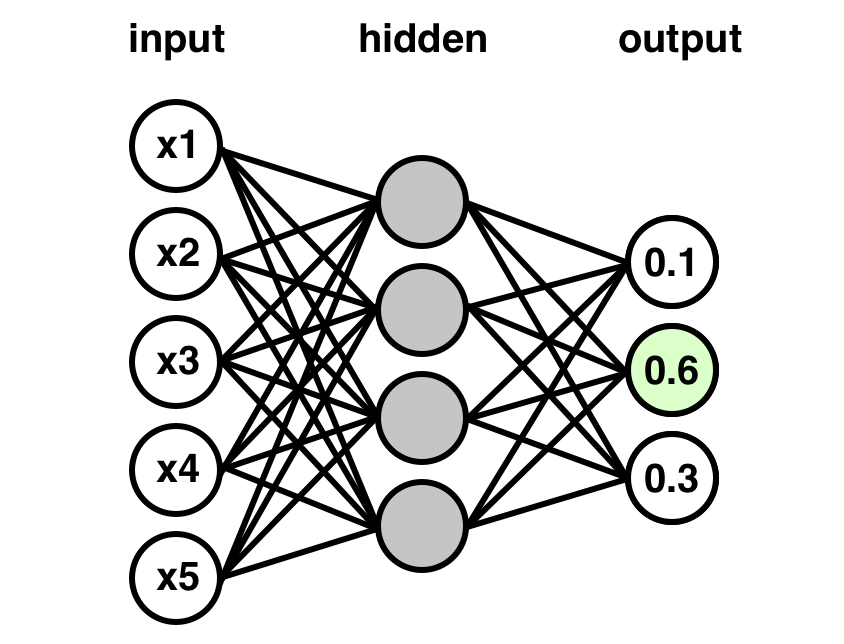
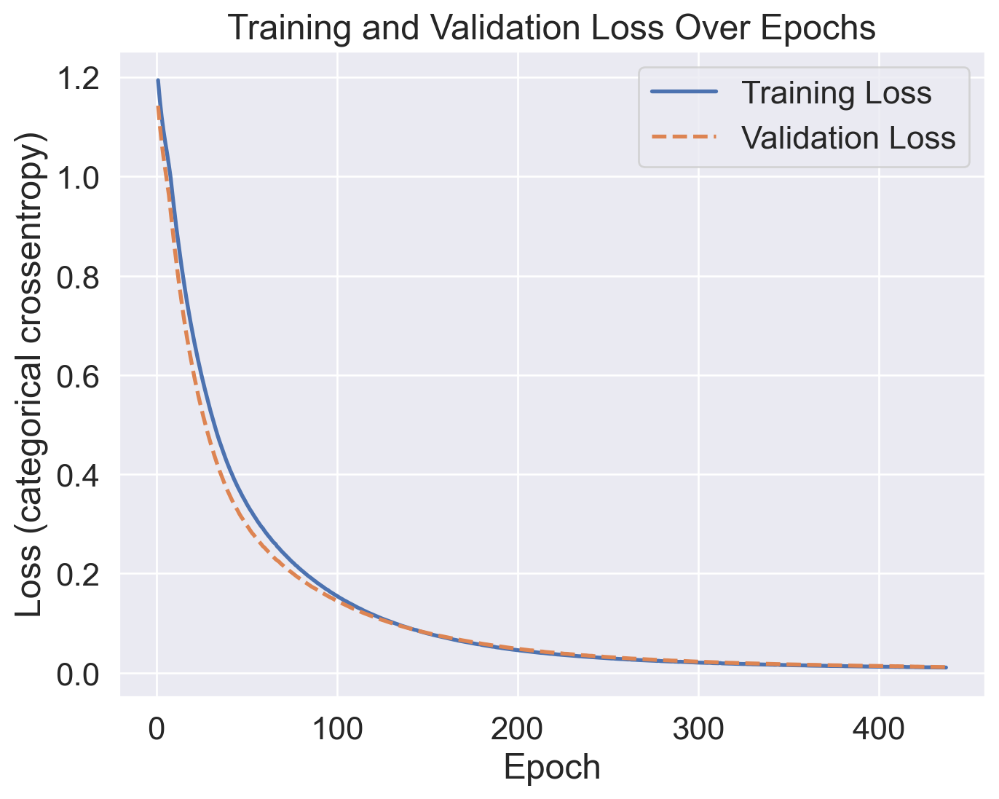
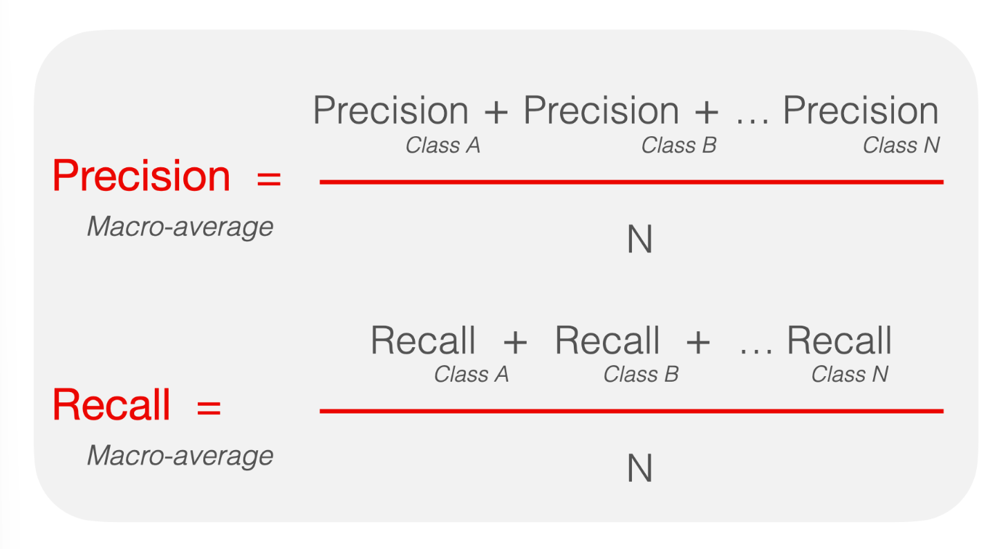
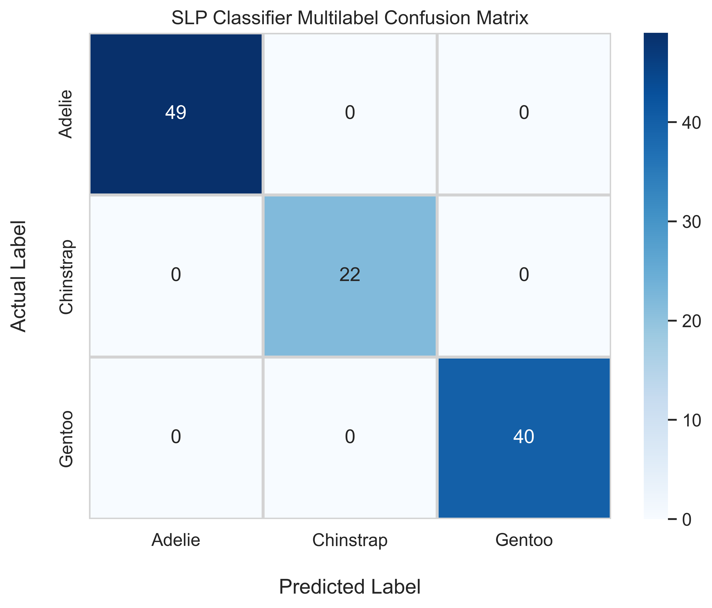

import pandas as pd
import numpy as np
import seaborn as sns
import sklearn as sk
import tensorflow.keras as keras
import matplotlib.pyplot as plt
from keras.models import Sequential
from keras.layers import Dense, Input
from keras.utils import to_categorical
from sklearn.model_selection import train_test_splitIn Machine Learning, learning and implementing classification models are a fundamental step on any data scientist’s journey. Here in this post, we will delve into the realm of multi-class classification problems, exploring fundamental concepts and applying a single-layer perceptron model to attack this problem.
Whether a seasoned veteran or just a beginner in this field, this tutorial aims to be your guide to approaching multi-class classification with neural networks. We will walk through all the essential steps of a standard machine learning project pipeline, from data preprocessing and model building to final evaluations.
We’ll be working with the Penguins dataset, a newer replacement for the classic Iris dataset introduced by Ronald Fisher in 1936. This dataset, available from the seaborn library, contains information about 3 penguin species. Each sample contains several informative features which provide insight into the characteristics of the different penguin species. The data were collected and made available by Dr. Kristen Gorman and the Palmer Station, Antarctica LTER (an abbreviation for Long Term Ecological Research).
Single-Layer Perceptron Models
So, what even is a single-layer perceptron (SLP) model anyways? An SLP model is one of the most simple forms of an artificial neural network. Just as its name implies, it is characterized by having only a single hidden layer of neurons responsible for making predictions. It is a type of feed-forward neural network, where data only flows forwards from the input layer, through the hidden layer, and then to the output layer.
The input layer will consist of nodes representing the features of the input data, with each node corresponding to a feature. Then, we have the hidden layer, with as many, or as few, nodes as you want. To keep this tutorial concise, this layer’s size will equal that of the input layer. There is much research done in the realm of optimizing hidden layer architecture that we simply cannot cover it here, but if you are interested, the internet is your friend. Finally, data will come from the hidden layer into the output layer. For our case, we have 3 classes to predict, so we will have three nodes which each output the probability for one of those classes.
Our model’s architecture will resemble something like the graphic below: 
Imports
Now that we have some background, let’s start with the imports required for this project. Here we will use pandas and numpy for most of our data preparation needs. Seaborn is where our dataset will come from, and along with matplotlib, will help us with some data visualizations down the line. Sklearn gives us easy ways to split our data as well as score our final predictions. Finally, our neural network model will be built using the keras framework.
Data Preprocessing
First, let’s load the penguins dataset to take a look at it. Luckily, seaborn has a nice built-in function to load this dataset. The data is returned as a pandas dataframe, so keep that in mind.
data = sns.load_dataset('penguins')
print(data.shape)
data.head()(344, 7)| species | island | bill_length_mm | bill_depth_mm | flipper_length_mm | body_mass_g | sex | |
|---|---|---|---|---|---|---|---|
| 0 | Adelie | Torgersen | 39.1 | 18.7 | 181.0 | 3750.0 | Male |
| 1 | Adelie | Torgersen | 39.5 | 17.4 | 186.0 | 3800.0 | Female |
| 2 | Adelie | Torgersen | 40.3 | 18.0 | 195.0 | 3250.0 | Female |
| 3 | Adelie | Torgersen | NaN | NaN | NaN | NaN | NaN |
| 4 | Adelie | Torgersen | 36.7 | 19.3 | 193.0 | 3450.0 | Female |
Looks great! We can see that the first column (‘species’) is our target variable. Along with that, we get the following features which the model can use for predictions:
island: The name of the island (Dream, Torgersen, or Biscoe) in the Palmer Archipelago (Antarctica) where the penguin was found.
bill_length_mm: The penguin’s bill length in millimeters
bill_depth_mm: The penguin’s bill depth in millimeters
flipper_length_mm: The penguin’s flipper length in millimeters
body_mass_g: The penguin’s body mass in grams
sex: The penguin’s sex
Some features are categorical, like species or island. Since neural networks require real-valued data to process, we are going to have to do something about that later.
Also, you may see that there are some missing values in our dataset, labeled as NaN. This is a problem, but thankfully we have an easy solution. We can use pandas dropna() method to drop the rows which contain missing values.
data = data.dropna()
print(data.shape)
data.head()(333, 7)| species | island | bill_length_mm | bill_depth_mm | flipper_length_mm | body_mass_g | sex | |
|---|---|---|---|---|---|---|---|
| 0 | Adelie | Torgersen | 39.1 | 18.7 | 181.0 | 3750.0 | Male |
| 1 | Adelie | Torgersen | 39.5 | 17.4 | 186.0 | 3800.0 | Female |
| 2 | Adelie | Torgersen | 40.3 | 18.0 | 195.0 | 3250.0 | Female |
| 4 | Adelie | Torgersen | 36.7 | 19.3 | 193.0 | 3450.0 | Female |
| 5 | Adelie | Torgersen | 39.3 | 20.6 | 190.0 | 3650.0 | Male |
Now, you can see that our dataset no longer has missing values, and we only had to drop 11 rows.
So, what should we do about those categorical variables? How can we convert the species names to numerical values that the neural network can interpret?
One popular method for this is called one-hot encoding. Essentially, we will make a column for each species and then place a value of 1 in that column if the penguin is that species.
For example, here, we have 3 species of penguins (Chinstrap, Adelie, and Gentoo). So, we will create three columns (one for each species) and then place a value of 1 or 0, indicating whether that is the species of the penguin.
First though, we have to get from the species names to some integer values. For this, we can use sklearn’s LabelEncoder().
# Encode labels as integers
labels = sk.preprocessing.LabelEncoder().fit_transform(data.iloc[:, 0].values)
np.unique(labels)array([0, 1, 2])Now, each species string has been assigned to an integer value. In our case:
0 indicates Adelie
1 indicates Chinstrap
2 indicates Gentoo
Next, we can one-hot encode these integer labels using a function from keras called to_categorical(). Afterwards, we will get 3 new columns for each species of penguin.
# One hot encode labels
one_hot_labels = to_categorical(labels)
np.unique(one_hot_labels, axis=0)array([[0., 0., 1.],
[0., 1., 0.],
[1., 0., 0.]], dtype=float32)We now have our one-hot encoded variable. Our model will now be able to correctly process this.
In the next code chunks, we do the exact same thing to the ‘island’ and ‘sex’ features in our dataset and then replace the original columns in the dataframe with these new columns.
# Encode other categorical features
# Island
island_labels = sk.preprocessing.LabelEncoder().fit_transform(data.iloc[:, 1].values)
one_hot_islands = to_categorical(island_labels)
# Sex
sex_labels = sk.preprocessing.LabelEncoder().fit_transform(data.iloc[:, -1].values)
one_hot_sex = to_categorical(sex_labels)# Aggregate back to dataframe
# Remove species column, add one-hot-encoded species features
processed_data = data.copy().drop('species', axis=1)
for idx,species in zip([0,1,2], data['species'].unique()[::-1]):
processed_data.insert(0, species, one_hot_labels[:, -(idx+1)])
# Remove island column, add one-hot-encoded island features
processed_data = processed_data.drop('island', axis=1)
for idx,island in zip([0,2,1], data['island'].unique()):
processed_data.insert(3, island, one_hot_islands[:, -(idx+1)])
# Remove sex column, add one-hot-encoded sex features
processed_data = processed_data.drop('sex', axis=1)
for idx,sex in zip([1,0], data['sex'].unique()):
processed_data.insert(10, sex, one_hot_sex[:, idx])
processed_data| Adelie | Chinstrap | Gentoo | Dream | Biscoe | Torgersen | bill_length_mm | bill_depth_mm | flipper_length_mm | body_mass_g | Female | Male | |
|---|---|---|---|---|---|---|---|---|---|---|---|---|
| 0 | 1.0 | 0.0 | 0.0 | 0.0 | 0.0 | 1.0 | 39.1 | 18.7 | 181.0 | 3750.0 | 0.0 | 1.0 |
| 1 | 1.0 | 0.0 | 0.0 | 0.0 | 0.0 | 1.0 | 39.5 | 17.4 | 186.0 | 3800.0 | 1.0 | 0.0 |
| 2 | 1.0 | 0.0 | 0.0 | 0.0 | 0.0 | 1.0 | 40.3 | 18.0 | 195.0 | 3250.0 | 1.0 | 0.0 |
| 4 | 1.0 | 0.0 | 0.0 | 0.0 | 0.0 | 1.0 | 36.7 | 19.3 | 193.0 | 3450.0 | 1.0 | 0.0 |
| 5 | 1.0 | 0.0 | 0.0 | 0.0 | 0.0 | 1.0 | 39.3 | 20.6 | 190.0 | 3650.0 | 0.0 | 1.0 |
| ... | ... | ... | ... | ... | ... | ... | ... | ... | ... | ... | ... | ... |
| 338 | 0.0 | 0.0 | 1.0 | 0.0 | 1.0 | 0.0 | 47.2 | 13.7 | 214.0 | 4925.0 | 1.0 | 0.0 |
| 340 | 0.0 | 0.0 | 1.0 | 0.0 | 1.0 | 0.0 | 46.8 | 14.3 | 215.0 | 4850.0 | 1.0 | 0.0 |
| 341 | 0.0 | 0.0 | 1.0 | 0.0 | 1.0 | 0.0 | 50.4 | 15.7 | 222.0 | 5750.0 | 0.0 | 1.0 |
| 342 | 0.0 | 0.0 | 1.0 | 0.0 | 1.0 | 0.0 | 45.2 | 14.8 | 212.0 | 5200.0 | 1.0 | 0.0 |
| 343 | 0.0 | 0.0 | 1.0 | 0.0 | 1.0 | 0.0 | 49.9 | 16.1 | 213.0 | 5400.0 | 0.0 | 1.0 |
333 rows × 12 columns
With all that done, our dataset is fully real-valued. So far, we have dropped missing values and one-hot encoded the categorical features.
Next up, we have to get our X (features) and y (target) and do some scaling. Scaling is crucial for neural networks because it helps ensure that the input features will contribute equally to the training process. If we do not scale our data, the features with larger values (like body mass in our case) will dominate the learning process. When features are on different scales, our optimization algorithm may take longer to converge or struggle to find an optimal solution. Scaling promotes a more stable and efficient training process. Here we will use sklearn’s MinMaxScaler() to scale our values between 0 and 1.
While we are messing with X and y, we might as well also split our data into train and validation sets with sklearn’s train_test_split(). We will be using a test size of 1/3, meaning that our remaining 2/3 of data will be used for training.
# Get X and y
X = processed_data.iloc[:, 3:].values
y = processed_data.iloc[:, :3].values
# Scale data
scaler = sk.preprocessing.MinMaxScaler()
X = scaler.fit_transform(X)
y = scaler.fit_transform(y)
# Train-test split 2/3:1/3
X_train, X_val, y_train, y_val = train_test_split(X,
y,
test_size=1/3,
stratify=y)Building our Model
And that concludes the data preprocessing step! Woooo
Finally, we can get on to building the neural network to actually make some predictions. Below, we build a simple, single-layer perceptron classifier to train.
Our layer sizes from input to output go: 9 > 9 > 3.
We have 9 features to input, then we will have a hidden layer of 9 nodes to train to make some predictions. These predictions will then be output as 3 values. Each value in the output corresponds to the probability that a sample is of a specific class.
We use the rectified linear unit (relu) function as the activation for the hidden layer. This allows us to impose a restriction on the output of the nodes in the hidden layer and mitigate the vanishing gradient problem. There are many types of activation functions, each with their own set of pros and cons. For our simple example though, this will work perfectly. Additionally, you can see that the output layer has a softmax activation function. We use this because the softmax function squishes the outputs into the range of (0, 1) and transforms the output from our hidden layer into a vector which represents the probabilities of our classes.
# Build slp classifier
slp_clf = Sequential()
slp_clf.add(Input(X.shape[1]))
slp_clf.add(Dense(X.shape[1], activation='relu'))
slp_clf.add(Dense(3, activation='softmax'))With the model set in place, we can now compile and fit the model. Also, we will train our model with early stopping to make sure we don’t overfit due to too many epochs. We will monitor the validation loss starting from epoch 10. If it does not improve over the course of 5 consecutive epochs, then we will stop training.
When compiling the model, we can use categorical crossentropy as our loss. This loss function is designed to compare probability distributions, and thus will work well in combination with our softmax activation function from earlier to tell us how far our model is from predicting classes correctly. Finally, we will monitor the accuracy of the model during training, as it is more easily interpretable. The accuracy metric tells us the fraction of correctly classified instances out of the total. A perfect model will score 1 here.
Finally, we can fit our model. We provide X_train and y_train to train the model on. The epochs here is set arbitrarily large so that we can stop training when the early stopping kicks in. Since our dataset is small, a smaller batch size of 16 is also used. Lastly, validation data is provided along with our callback to stop early.
# Early Stopping
stop_early = keras.callbacks.EarlyStopping(monitor='val_loss',
patience=3,
start_from_epoch=10)
# Compile
slp_clf.compile(loss='categorical_crossentropy',
optimizer='adam',
metrics=['accuracy'])
# Fit
history = slp_clf.fit(X_train,
y_train,
epochs=500,
batch_size=16,
verbose=2,
validation_data=(X_val, y_val),
callbacks=[stop_early])Epoch 1/500
14/14 - 1s - loss: 1.1940 - accuracy: 0.4369 - val_loss: 1.1427 - val_accuracy: 0.4414 - 1s/epoch - 102ms/step
Epoch 2/500
14/14 - 0s - loss: 1.1533 - accuracy: 0.4369 - val_loss: 1.1025 - val_accuracy: 0.4414 - 49ms/epoch - 3ms/step
Epoch 3/500
14/14 - 0s - loss: 1.1203 - accuracy: 0.4550 - val_loss: 1.0687 - val_accuracy: 0.5495 - 52ms/epoch - 4ms/step
Epoch 4/500
14/14 - 0s - loss: 1.0926 - accuracy: 0.5631 - val_loss: 1.0394 - val_accuracy: 0.6306 - 48ms/epoch - 3ms/step
Epoch 5/500
14/14 - 0s - loss: 1.0685 - accuracy: 0.5991 - val_loss: 1.0140 - val_accuracy: 0.6396 - 62ms/epoch - 4ms/step
Epoch 6/500
14/14 - 0s - loss: 1.0467 - accuracy: 0.5946 - val_loss: 0.9892 - val_accuracy: 0.6396 - 47ms/epoch - 3ms/step
Epoch 7/500
14/14 - 0s - loss: 1.0227 - accuracy: 0.5811 - val_loss: 0.9625 - val_accuracy: 0.6216 - 47ms/epoch - 3ms/step
Epoch 8/500
14/14 - 0s - loss: 0.9969 - accuracy: 0.5676 - val_loss: 0.9289 - val_accuracy: 0.6306 - 62ms/epoch - 4ms/step
Epoch 9/500
14/14 - 0s - loss: 0.9628 - accuracy: 0.5721 - val_loss: 0.8944 - val_accuracy: 0.6396 - 78ms/epoch - 6ms/step
Epoch 10/500
14/14 - 0s - loss: 0.9312 - accuracy: 0.6081 - val_loss: 0.8613 - val_accuracy: 0.7207 - 62ms/epoch - 4ms/step
Epoch 11/500
14/14 - 0s - loss: 0.9004 - accuracy: 0.6937 - val_loss: 0.8316 - val_accuracy: 0.7477 - 56ms/epoch - 4ms/step
Epoch 12/500
14/14 - 0s - loss: 0.8733 - accuracy: 0.7252 - val_loss: 0.8015 - val_accuracy: 0.7658 - 47ms/epoch - 3ms/step
Epoch 13/500
14/14 - 0s - loss: 0.8453 - accuracy: 0.7297 - val_loss: 0.7737 - val_accuracy: 0.7658 - 58ms/epoch - 4ms/step
Epoch 14/500
14/14 - 0s - loss: 0.8189 - accuracy: 0.7297 - val_loss: 0.7476 - val_accuracy: 0.7658 - 47ms/epoch - 3ms/step
Epoch 15/500
14/14 - 0s - loss: 0.7944 - accuracy: 0.7387 - val_loss: 0.7219 - val_accuracy: 0.7658 - 62ms/epoch - 4ms/step
Epoch 16/500
14/14 - 0s - loss: 0.7704 - accuracy: 0.7387 - val_loss: 0.6980 - val_accuracy: 0.7658 - 63ms/epoch - 4ms/step
Epoch 17/500
14/14 - 0s - loss: 0.7478 - accuracy: 0.7387 - val_loss: 0.6759 - val_accuracy: 0.7658 - 62ms/epoch - 4ms/step
Epoch 18/500
14/14 - 0s - loss: 0.7269 - accuracy: 0.7523 - val_loss: 0.6549 - val_accuracy: 0.7748 - 62ms/epoch - 4ms/step
Epoch 19/500
14/14 - 0s - loss: 0.7059 - accuracy: 0.7568 - val_loss: 0.6351 - val_accuracy: 0.7838 - 47ms/epoch - 3ms/step
Epoch 20/500
14/14 - 0s - loss: 0.6865 - accuracy: 0.7613 - val_loss: 0.6159 - val_accuracy: 0.7838 - 54ms/epoch - 4ms/step
Epoch 21/500
14/14 - 0s - loss: 0.6677 - accuracy: 0.7613 - val_loss: 0.5974 - val_accuracy: 0.7838 - 56ms/epoch - 4ms/step
Epoch 22/500
14/14 - 0s - loss: 0.6501 - accuracy: 0.7658 - val_loss: 0.5802 - val_accuracy: 0.7838 - 47ms/epoch - 3ms/step
Epoch 23/500
14/14 - 0s - loss: 0.6326 - accuracy: 0.7658 - val_loss: 0.5632 - val_accuracy: 0.7928 - 52ms/epoch - 4ms/step
Epoch 24/500
14/14 - 0s - loss: 0.6161 - accuracy: 0.7658 - val_loss: 0.5471 - val_accuracy: 0.7928 - 47ms/epoch - 3ms/step
Epoch 25/500
14/14 - 0s - loss: 0.6001 - accuracy: 0.7703 - val_loss: 0.5319 - val_accuracy: 0.7928 - 62ms/epoch - 4ms/step
Epoch 26/500
14/14 - 0s - loss: 0.5850 - accuracy: 0.7793 - val_loss: 0.5171 - val_accuracy: 0.7928 - 47ms/epoch - 3ms/step
Epoch 27/500
14/14 - 0s - loss: 0.5700 - accuracy: 0.7838 - val_loss: 0.5032 - val_accuracy: 0.7928 - 62ms/epoch - 4ms/step
Epoch 28/500
14/14 - 0s - loss: 0.5557 - accuracy: 0.7838 - val_loss: 0.4891 - val_accuracy: 0.7928 - 47ms/epoch - 3ms/step
Epoch 29/500
14/14 - 0s - loss: 0.5413 - accuracy: 0.7883 - val_loss: 0.4761 - val_accuracy: 0.7928 - 51ms/epoch - 4ms/step
Epoch 30/500
14/14 - 0s - loss: 0.5278 - accuracy: 0.7883 - val_loss: 0.4635 - val_accuracy: 0.7928 - 63ms/epoch - 4ms/step
Epoch 31/500
14/14 - 0s - loss: 0.5151 - accuracy: 0.7883 - val_loss: 0.4522 - val_accuracy: 0.7928 - 52ms/epoch - 4ms/step
Epoch 32/500
14/14 - 0s - loss: 0.5018 - accuracy: 0.7928 - val_loss: 0.4397 - val_accuracy: 0.7928 - 53ms/epoch - 4ms/step
Epoch 33/500
14/14 - 0s - loss: 0.4898 - accuracy: 0.7928 - val_loss: 0.4284 - val_accuracy: 0.7928 - 49ms/epoch - 4ms/step
Epoch 34/500
14/14 - 0s - loss: 0.4777 - accuracy: 0.7928 - val_loss: 0.4175 - val_accuracy: 0.7928 - 47ms/epoch - 3ms/step
Epoch 35/500
14/14 - 0s - loss: 0.4665 - accuracy: 0.7928 - val_loss: 0.4075 - val_accuracy: 0.8018 - 62ms/epoch - 4ms/step
Epoch 36/500
14/14 - 0s - loss: 0.4559 - accuracy: 0.7928 - val_loss: 0.3981 - val_accuracy: 0.8018 - 63ms/epoch - 4ms/step
Epoch 37/500
14/14 - 0s - loss: 0.4451 - accuracy: 0.7973 - val_loss: 0.3888 - val_accuracy: 0.8018 - 47ms/epoch - 3ms/step
Epoch 38/500
14/14 - 0s - loss: 0.4354 - accuracy: 0.8108 - val_loss: 0.3791 - val_accuracy: 0.8198 - 58ms/epoch - 4ms/step
Epoch 39/500
14/14 - 0s - loss: 0.4255 - accuracy: 0.8198 - val_loss: 0.3706 - val_accuracy: 0.8198 - 43ms/epoch - 3ms/step
Epoch 40/500
14/14 - 0s - loss: 0.4163 - accuracy: 0.8423 - val_loss: 0.3628 - val_accuracy: 0.8468 - 62ms/epoch - 4ms/step
Epoch 41/500
14/14 - 0s - loss: 0.4074 - accuracy: 0.8514 - val_loss: 0.3551 - val_accuracy: 0.8739 - 47ms/epoch - 3ms/step
Epoch 42/500
14/14 - 0s - loss: 0.3993 - accuracy: 0.8739 - val_loss: 0.3471 - val_accuracy: 0.8919 - 57ms/epoch - 4ms/step
Epoch 43/500
14/14 - 0s - loss: 0.3906 - accuracy: 0.8874 - val_loss: 0.3402 - val_accuracy: 0.8919 - 46ms/epoch - 3ms/step
Epoch 44/500
14/14 - 0s - loss: 0.3827 - accuracy: 0.8964 - val_loss: 0.3335 - val_accuracy: 0.9099 - 62ms/epoch - 4ms/step
Epoch 45/500
14/14 - 0s - loss: 0.3751 - accuracy: 0.8964 - val_loss: 0.3273 - val_accuracy: 0.9099 - 47ms/epoch - 3ms/step
Epoch 46/500
14/14 - 0s - loss: 0.3679 - accuracy: 0.9144 - val_loss: 0.3203 - val_accuracy: 0.9279 - 47ms/epoch - 3ms/step
Epoch 47/500
14/14 - 0s - loss: 0.3605 - accuracy: 0.9144 - val_loss: 0.3143 - val_accuracy: 0.9279 - 48ms/epoch - 3ms/step
Epoch 48/500
14/14 - 0s - loss: 0.3538 - accuracy: 0.9189 - val_loss: 0.3089 - val_accuracy: 0.9279 - 46ms/epoch - 3ms/step
Epoch 49/500
14/14 - 0s - loss: 0.3476 - accuracy: 0.9279 - val_loss: 0.3024 - val_accuracy: 0.9459 - 47ms/epoch - 3ms/step
Epoch 50/500
14/14 - 0s - loss: 0.3406 - accuracy: 0.9640 - val_loss: 0.2975 - val_accuracy: 0.9459 - 68ms/epoch - 5ms/step
Epoch 51/500
14/14 - 0s - loss: 0.3345 - accuracy: 0.9595 - val_loss: 0.2925 - val_accuracy: 0.9459 - 49ms/epoch - 3ms/step
Epoch 52/500
14/14 - 0s - loss: 0.3283 - accuracy: 0.9685 - val_loss: 0.2869 - val_accuracy: 0.9550 - 54ms/epoch - 4ms/step
Epoch 53/500
14/14 - 0s - loss: 0.3229 - accuracy: 0.9685 - val_loss: 0.2817 - val_accuracy: 0.9640 - 47ms/epoch - 3ms/step
Epoch 54/500
14/14 - 0s - loss: 0.3168 - accuracy: 0.9730 - val_loss: 0.2775 - val_accuracy: 0.9640 - 47ms/epoch - 3ms/step
Epoch 55/500
14/14 - 0s - loss: 0.3114 - accuracy: 0.9730 - val_loss: 0.2727 - val_accuracy: 0.9730 - 62ms/epoch - 4ms/step
Epoch 56/500
14/14 - 0s - loss: 0.3056 - accuracy: 0.9775 - val_loss: 0.2684 - val_accuracy: 0.9640 - 47ms/epoch - 3ms/step
Epoch 57/500
14/14 - 0s - loss: 0.3004 - accuracy: 0.9820 - val_loss: 0.2638 - val_accuracy: 0.9640 - 50ms/epoch - 4ms/step
Epoch 58/500
14/14 - 0s - loss: 0.2952 - accuracy: 0.9865 - val_loss: 0.2596 - val_accuracy: 0.9640 - 49ms/epoch - 4ms/step
Epoch 59/500
14/14 - 0s - loss: 0.2910 - accuracy: 0.9910 - val_loss: 0.2550 - val_accuracy: 0.9640 - 47ms/epoch - 3ms/step
Epoch 60/500
14/14 - 0s - loss: 0.2855 - accuracy: 0.9910 - val_loss: 0.2519 - val_accuracy: 0.9640 - 47ms/epoch - 3ms/step
Epoch 61/500
14/14 - 0s - loss: 0.2807 - accuracy: 0.9910 - val_loss: 0.2477 - val_accuracy: 0.9640 - 48ms/epoch - 3ms/step
Epoch 62/500
14/14 - 0s - loss: 0.2760 - accuracy: 0.9910 - val_loss: 0.2441 - val_accuracy: 0.9640 - 59ms/epoch - 4ms/step
Epoch 63/500
14/14 - 0s - loss: 0.2717 - accuracy: 0.9910 - val_loss: 0.2400 - val_accuracy: 0.9640 - 47ms/epoch - 3ms/step
Epoch 64/500
14/14 - 0s - loss: 0.2669 - accuracy: 0.9910 - val_loss: 0.2364 - val_accuracy: 0.9640 - 47ms/epoch - 3ms/step
Epoch 65/500
14/14 - 0s - loss: 0.2626 - accuracy: 0.9955 - val_loss: 0.2330 - val_accuracy: 0.9640 - 47ms/epoch - 3ms/step
Epoch 66/500
14/14 - 0s - loss: 0.2594 - accuracy: 0.9910 - val_loss: 0.2290 - val_accuracy: 0.9640 - 43ms/epoch - 3ms/step
Epoch 67/500
14/14 - 0s - loss: 0.2541 - accuracy: 0.9955 - val_loss: 0.2261 - val_accuracy: 0.9550 - 64ms/epoch - 5ms/step
Epoch 68/500
14/14 - 0s - loss: 0.2507 - accuracy: 0.9955 - val_loss: 0.2236 - val_accuracy: 0.9640 - 55ms/epoch - 4ms/step
Epoch 69/500
14/14 - 0s - loss: 0.2463 - accuracy: 1.0000 - val_loss: 0.2196 - val_accuracy: 0.9550 - 45ms/epoch - 3ms/step
Epoch 70/500
14/14 - 0s - loss: 0.2426 - accuracy: 0.9955 - val_loss: 0.2167 - val_accuracy: 0.9640 - 63ms/epoch - 4ms/step
Epoch 71/500
14/14 - 0s - loss: 0.2387 - accuracy: 0.9910 - val_loss: 0.2132 - val_accuracy: 0.9550 - 56ms/epoch - 4ms/step
Epoch 72/500
14/14 - 0s - loss: 0.2350 - accuracy: 0.9955 - val_loss: 0.2101 - val_accuracy: 0.9640 - 63ms/epoch - 5ms/step
Epoch 73/500
14/14 - 0s - loss: 0.2314 - accuracy: 0.9910 - val_loss: 0.2077 - val_accuracy: 0.9550 - 48ms/epoch - 3ms/step
Epoch 74/500
14/14 - 0s - loss: 0.2277 - accuracy: 0.9955 - val_loss: 0.2045 - val_accuracy: 0.9550 - 74ms/epoch - 5ms/step
Epoch 75/500
14/14 - 0s - loss: 0.2240 - accuracy: 0.9955 - val_loss: 0.2019 - val_accuracy: 0.9550 - 47ms/epoch - 3ms/step
Epoch 76/500
14/14 - 0s - loss: 0.2209 - accuracy: 0.9955 - val_loss: 0.1990 - val_accuracy: 0.9550 - 66ms/epoch - 5ms/step
Epoch 77/500
14/14 - 0s - loss: 0.2171 - accuracy: 0.9955 - val_loss: 0.1962 - val_accuracy: 0.9550 - 46ms/epoch - 3ms/step
Epoch 78/500
14/14 - 0s - loss: 0.2143 - accuracy: 0.9910 - val_loss: 0.1933 - val_accuracy: 0.9640 - 64ms/epoch - 5ms/step
Epoch 79/500
14/14 - 0s - loss: 0.2107 - accuracy: 0.9955 - val_loss: 0.1908 - val_accuracy: 0.9550 - 47ms/epoch - 3ms/step
Epoch 80/500
14/14 - 0s - loss: 0.2076 - accuracy: 0.9955 - val_loss: 0.1885 - val_accuracy: 0.9550 - 45ms/epoch - 3ms/step
Epoch 81/500
14/14 - 0s - loss: 0.2044 - accuracy: 0.9955 - val_loss: 0.1859 - val_accuracy: 0.9550 - 62ms/epoch - 4ms/step
Epoch 82/500
14/14 - 0s - loss: 0.2014 - accuracy: 0.9955 - val_loss: 0.1831 - val_accuracy: 0.9550 - 47ms/epoch - 3ms/step
Epoch 83/500
14/14 - 0s - loss: 0.1985 - accuracy: 1.0000 - val_loss: 0.1809 - val_accuracy: 0.9640 - 47ms/epoch - 3ms/step
Epoch 84/500
14/14 - 0s - loss: 0.1953 - accuracy: 0.9955 - val_loss: 0.1783 - val_accuracy: 0.9550 - 42ms/epoch - 3ms/step
Epoch 85/500
14/14 - 0s - loss: 0.1926 - accuracy: 0.9955 - val_loss: 0.1760 - val_accuracy: 0.9550 - 53ms/epoch - 4ms/step
Epoch 86/500
14/14 - 0s - loss: 0.1900 - accuracy: 0.9910 - val_loss: 0.1734 - val_accuracy: 0.9730 - 60ms/epoch - 4ms/step
Epoch 87/500
14/14 - 0s - loss: 0.1869 - accuracy: 0.9910 - val_loss: 0.1713 - val_accuracy: 0.9640 - 36ms/epoch - 3ms/step
Epoch 88/500
14/14 - 0s - loss: 0.1845 - accuracy: 1.0000 - val_loss: 0.1695 - val_accuracy: 0.9640 - 47ms/epoch - 3ms/step
Epoch 89/500
14/14 - 0s - loss: 0.1813 - accuracy: 1.0000 - val_loss: 0.1671 - val_accuracy: 0.9730 - 47ms/epoch - 3ms/step
Epoch 90/500
14/14 - 0s - loss: 0.1790 - accuracy: 0.9910 - val_loss: 0.1646 - val_accuracy: 0.9730 - 61ms/epoch - 4ms/step
Epoch 91/500
14/14 - 0s - loss: 0.1762 - accuracy: 0.9910 - val_loss: 0.1626 - val_accuracy: 0.9640 - 47ms/epoch - 3ms/step
Epoch 92/500
14/14 - 0s - loss: 0.1738 - accuracy: 1.0000 - val_loss: 0.1607 - val_accuracy: 0.9730 - 48ms/epoch - 3ms/step
Epoch 93/500
14/14 - 0s - loss: 0.1711 - accuracy: 1.0000 - val_loss: 0.1586 - val_accuracy: 0.9640 - 55ms/epoch - 4ms/step
Epoch 94/500
14/14 - 0s - loss: 0.1685 - accuracy: 1.0000 - val_loss: 0.1564 - val_accuracy: 0.9640 - 49ms/epoch - 4ms/step
Epoch 95/500
14/14 - 0s - loss: 0.1666 - accuracy: 0.9910 - val_loss: 0.1544 - val_accuracy: 0.9730 - 46ms/epoch - 3ms/step
Epoch 96/500
14/14 - 0s - loss: 0.1637 - accuracy: 0.9955 - val_loss: 0.1524 - val_accuracy: 0.9640 - 47ms/epoch - 3ms/step
Epoch 97/500
14/14 - 0s - loss: 0.1615 - accuracy: 1.0000 - val_loss: 0.1507 - val_accuracy: 0.9730 - 47ms/epoch - 3ms/step
Epoch 98/500
14/14 - 0s - loss: 0.1592 - accuracy: 1.0000 - val_loss: 0.1487 - val_accuracy: 0.9730 - 51ms/epoch - 4ms/step
Epoch 99/500
14/14 - 0s - loss: 0.1568 - accuracy: 1.0000 - val_loss: 0.1467 - val_accuracy: 0.9730 - 46ms/epoch - 3ms/step
Epoch 100/500
14/14 - 0s - loss: 0.1548 - accuracy: 0.9955 - val_loss: 0.1447 - val_accuracy: 0.9820 - 47ms/epoch - 3ms/step
Epoch 101/500
14/14 - 0s - loss: 0.1524 - accuracy: 1.0000 - val_loss: 0.1429 - val_accuracy: 0.9730 - 49ms/epoch - 4ms/step
Epoch 102/500
14/14 - 0s - loss: 0.1502 - accuracy: 1.0000 - val_loss: 0.1411 - val_accuracy: 0.9730 - 47ms/epoch - 3ms/step
Epoch 103/500
14/14 - 0s - loss: 0.1482 - accuracy: 1.0000 - val_loss: 0.1395 - val_accuracy: 0.9730 - 53ms/epoch - 4ms/step
Epoch 104/500
14/14 - 0s - loss: 0.1459 - accuracy: 1.0000 - val_loss: 0.1376 - val_accuracy: 0.9730 - 64ms/epoch - 5ms/step
Epoch 105/500
14/14 - 0s - loss: 0.1441 - accuracy: 0.9955 - val_loss: 0.1358 - val_accuracy: 0.9820 - 50ms/epoch - 4ms/step
Epoch 106/500
14/14 - 0s - loss: 0.1419 - accuracy: 0.9955 - val_loss: 0.1342 - val_accuracy: 0.9730 - 48ms/epoch - 3ms/step
Epoch 107/500
14/14 - 0s - loss: 0.1399 - accuracy: 1.0000 - val_loss: 0.1325 - val_accuracy: 0.9730 - 42ms/epoch - 3ms/step
Epoch 108/500
14/14 - 0s - loss: 0.1382 - accuracy: 0.9955 - val_loss: 0.1308 - val_accuracy: 0.9820 - 62ms/epoch - 4ms/step
Epoch 109/500
14/14 - 0s - loss: 0.1362 - accuracy: 1.0000 - val_loss: 0.1290 - val_accuracy: 0.9820 - 63ms/epoch - 4ms/step
Epoch 110/500
14/14 - 0s - loss: 0.1342 - accuracy: 1.0000 - val_loss: 0.1277 - val_accuracy: 0.9820 - 47ms/epoch - 3ms/step
Epoch 111/500
14/14 - 0s - loss: 0.1323 - accuracy: 1.0000 - val_loss: 0.1262 - val_accuracy: 0.9820 - 64ms/epoch - 5ms/step
Epoch 112/500
14/14 - 0s - loss: 0.1304 - accuracy: 1.0000 - val_loss: 0.1246 - val_accuracy: 0.9730 - 54ms/epoch - 4ms/step
Epoch 113/500
14/14 - 0s - loss: 0.1290 - accuracy: 1.0000 - val_loss: 0.1230 - val_accuracy: 0.9730 - 48ms/epoch - 3ms/step
Epoch 114/500
14/14 - 0s - loss: 0.1269 - accuracy: 1.0000 - val_loss: 0.1214 - val_accuracy: 0.9820 - 47ms/epoch - 3ms/step
Epoch 115/500
14/14 - 0s - loss: 0.1250 - accuracy: 1.0000 - val_loss: 0.1200 - val_accuracy: 0.9730 - 47ms/epoch - 3ms/step
Epoch 116/500
14/14 - 0s - loss: 0.1234 - accuracy: 1.0000 - val_loss: 0.1186 - val_accuracy: 0.9730 - 47ms/epoch - 3ms/step
Epoch 117/500
14/14 - 0s - loss: 0.1216 - accuracy: 1.0000 - val_loss: 0.1171 - val_accuracy: 0.9730 - 62ms/epoch - 4ms/step
Epoch 118/500
14/14 - 0s - loss: 0.1201 - accuracy: 1.0000 - val_loss: 0.1158 - val_accuracy: 0.9730 - 47ms/epoch - 3ms/step
Epoch 119/500
14/14 - 0s - loss: 0.1185 - accuracy: 1.0000 - val_loss: 0.1144 - val_accuracy: 0.9730 - 47ms/epoch - 3ms/step
Epoch 120/500
14/14 - 0s - loss: 0.1169 - accuracy: 1.0000 - val_loss: 0.1130 - val_accuracy: 0.9730 - 40ms/epoch - 3ms/step
Epoch 121/500
14/14 - 0s - loss: 0.1152 - accuracy: 1.0000 - val_loss: 0.1117 - val_accuracy: 0.9820 - 63ms/epoch - 4ms/step
Epoch 122/500
14/14 - 0s - loss: 0.1137 - accuracy: 1.0000 - val_loss: 0.1102 - val_accuracy: 0.9820 - 47ms/epoch - 3ms/step
Epoch 123/500
14/14 - 0s - loss: 0.1121 - accuracy: 1.0000 - val_loss: 0.1089 - val_accuracy: 0.9820 - 54ms/epoch - 4ms/step
Epoch 124/500
14/14 - 0s - loss: 0.1107 - accuracy: 1.0000 - val_loss: 0.1076 - val_accuracy: 0.9820 - 46ms/epoch - 3ms/step
Epoch 125/500
14/14 - 0s - loss: 0.1091 - accuracy: 1.0000 - val_loss: 0.1063 - val_accuracy: 0.9820 - 47ms/epoch - 3ms/step
Epoch 126/500
14/14 - 0s - loss: 0.1077 - accuracy: 1.0000 - val_loss: 0.1052 - val_accuracy: 0.9910 - 47ms/epoch - 3ms/step
Epoch 127/500
14/14 - 0s - loss: 0.1065 - accuracy: 1.0000 - val_loss: 0.1039 - val_accuracy: 0.9820 - 47ms/epoch - 3ms/step
Epoch 128/500
14/14 - 0s - loss: 0.1050 - accuracy: 1.0000 - val_loss: 0.1027 - val_accuracy: 0.9910 - 47ms/epoch - 3ms/step
Epoch 129/500
14/14 - 0s - loss: 0.1036 - accuracy: 1.0000 - val_loss: 0.1015 - val_accuracy: 0.9910 - 47ms/epoch - 3ms/step
Epoch 130/500
14/14 - 0s - loss: 0.1022 - accuracy: 1.0000 - val_loss: 0.1003 - val_accuracy: 0.9910 - 62ms/epoch - 4ms/step
Epoch 131/500
14/14 - 0s - loss: 0.1010 - accuracy: 1.0000 - val_loss: 0.0991 - val_accuracy: 0.9910 - 40ms/epoch - 3ms/step
Epoch 132/500
14/14 - 0s - loss: 0.0997 - accuracy: 1.0000 - val_loss: 0.0980 - val_accuracy: 0.9910 - 49ms/epoch - 4ms/step
Epoch 133/500
14/14 - 0s - loss: 0.0984 - accuracy: 1.0000 - val_loss: 0.0967 - val_accuracy: 1.0000 - 47ms/epoch - 3ms/step
Epoch 134/500
14/14 - 0s - loss: 0.0971 - accuracy: 1.0000 - val_loss: 0.0956 - val_accuracy: 0.9910 - 47ms/epoch - 3ms/step
Epoch 135/500
14/14 - 0s - loss: 0.0957 - accuracy: 1.0000 - val_loss: 0.0945 - val_accuracy: 0.9910 - 62ms/epoch - 4ms/step
Epoch 136/500
14/14 - 0s - loss: 0.0945 - accuracy: 1.0000 - val_loss: 0.0935 - val_accuracy: 0.9910 - 47ms/epoch - 3ms/step
Epoch 137/500
14/14 - 0s - loss: 0.0933 - accuracy: 1.0000 - val_loss: 0.0924 - val_accuracy: 1.0000 - 47ms/epoch - 3ms/step
Epoch 138/500
14/14 - 0s - loss: 0.0921 - accuracy: 1.0000 - val_loss: 0.0914 - val_accuracy: 0.9910 - 47ms/epoch - 3ms/step
Epoch 139/500
14/14 - 0s - loss: 0.0908 - accuracy: 1.0000 - val_loss: 0.0904 - val_accuracy: 1.0000 - 47ms/epoch - 3ms/step
Epoch 140/500
14/14 - 0s - loss: 0.0898 - accuracy: 0.9955 - val_loss: 0.0893 - val_accuracy: 1.0000 - 62ms/epoch - 4ms/step
Epoch 141/500
14/14 - 0s - loss: 0.0887 - accuracy: 1.0000 - val_loss: 0.0884 - val_accuracy: 1.0000 - 44ms/epoch - 3ms/step
Epoch 142/500
14/14 - 0s - loss: 0.0875 - accuracy: 1.0000 - val_loss: 0.0874 - val_accuracy: 1.0000 - 55ms/epoch - 4ms/step
Epoch 143/500
14/14 - 0s - loss: 0.0865 - accuracy: 1.0000 - val_loss: 0.0864 - val_accuracy: 1.0000 - 47ms/epoch - 3ms/step
Epoch 144/500
14/14 - 0s - loss: 0.0859 - accuracy: 1.0000 - val_loss: 0.0855 - val_accuracy: 0.9910 - 63ms/epoch - 4ms/step
Epoch 145/500
14/14 - 0s - loss: 0.0843 - accuracy: 1.0000 - val_loss: 0.0845 - val_accuracy: 1.0000 - 47ms/epoch - 3ms/step
Epoch 146/500
14/14 - 0s - loss: 0.0833 - accuracy: 1.0000 - val_loss: 0.0836 - val_accuracy: 0.9910 - 47ms/epoch - 3ms/step
Epoch 147/500
14/14 - 0s - loss: 0.0823 - accuracy: 1.0000 - val_loss: 0.0827 - val_accuracy: 1.0000 - 47ms/epoch - 3ms/step
Epoch 148/500
14/14 - 0s - loss: 0.0812 - accuracy: 1.0000 - val_loss: 0.0819 - val_accuracy: 1.0000 - 63ms/epoch - 4ms/step
Epoch 149/500
14/14 - 0s - loss: 0.0802 - accuracy: 1.0000 - val_loss: 0.0811 - val_accuracy: 1.0000 - 47ms/epoch - 3ms/step
Epoch 150/500
14/14 - 0s - loss: 0.0792 - accuracy: 1.0000 - val_loss: 0.0801 - val_accuracy: 0.9910 - 57ms/epoch - 4ms/step
Epoch 151/500
14/14 - 0s - loss: 0.0785 - accuracy: 1.0000 - val_loss: 0.0793 - val_accuracy: 0.9910 - 49ms/epoch - 3ms/step
Epoch 152/500
14/14 - 0s - loss: 0.0776 - accuracy: 1.0000 - val_loss: 0.0784 - val_accuracy: 1.0000 - 47ms/epoch - 3ms/step
Epoch 153/500
14/14 - 0s - loss: 0.0764 - accuracy: 1.0000 - val_loss: 0.0775 - val_accuracy: 1.0000 - 47ms/epoch - 3ms/step
Epoch 154/500
14/14 - 0s - loss: 0.0756 - accuracy: 1.0000 - val_loss: 0.0767 - val_accuracy: 1.0000 - 62ms/epoch - 4ms/step
Epoch 155/500
14/14 - 0s - loss: 0.0746 - accuracy: 1.0000 - val_loss: 0.0759 - val_accuracy: 1.0000 - 47ms/epoch - 3ms/step
Epoch 156/500
14/14 - 0s - loss: 0.0738 - accuracy: 1.0000 - val_loss: 0.0752 - val_accuracy: 1.0000 - 62ms/epoch - 4ms/step
Epoch 157/500
14/14 - 0s - loss: 0.0730 - accuracy: 1.0000 - val_loss: 0.0743 - val_accuracy: 0.9910 - 47ms/epoch - 3ms/step
Epoch 158/500
14/14 - 0s - loss: 0.0721 - accuracy: 1.0000 - val_loss: 0.0736 - val_accuracy: 1.0000 - 47ms/epoch - 3ms/step
Epoch 159/500
14/14 - 0s - loss: 0.0715 - accuracy: 1.0000 - val_loss: 0.0729 - val_accuracy: 0.9910 - 62ms/epoch - 4ms/step
Epoch 160/500
14/14 - 0s - loss: 0.0705 - accuracy: 1.0000 - val_loss: 0.0722 - val_accuracy: 1.0000 - 47ms/epoch - 3ms/step
Epoch 161/500
14/14 - 0s - loss: 0.0699 - accuracy: 0.9955 - val_loss: 0.0714 - val_accuracy: 1.0000 - 52ms/epoch - 4ms/step
Epoch 162/500
14/14 - 0s - loss: 0.0688 - accuracy: 1.0000 - val_loss: 0.0707 - val_accuracy: 1.0000 - 49ms/epoch - 3ms/step
Epoch 163/500
14/14 - 0s - loss: 0.0681 - accuracy: 1.0000 - val_loss: 0.0699 - val_accuracy: 0.9910 - 47ms/epoch - 3ms/step
Epoch 164/500
14/14 - 0s - loss: 0.0671 - accuracy: 1.0000 - val_loss: 0.0692 - val_accuracy: 1.0000 - 62ms/epoch - 4ms/step
Epoch 165/500
14/14 - 0s - loss: 0.0665 - accuracy: 1.0000 - val_loss: 0.0684 - val_accuracy: 1.0000 - 47ms/epoch - 3ms/step
Epoch 166/500
14/14 - 0s - loss: 0.0659 - accuracy: 1.0000 - val_loss: 0.0678 - val_accuracy: 1.0000 - 47ms/epoch - 3ms/step
Epoch 167/500
14/14 - 0s - loss: 0.0649 - accuracy: 1.0000 - val_loss: 0.0671 - val_accuracy: 1.0000 - 47ms/epoch - 3ms/step
Epoch 168/500
14/14 - 0s - loss: 0.0642 - accuracy: 1.0000 - val_loss: 0.0663 - val_accuracy: 1.0000 - 62ms/epoch - 4ms/step
Epoch 169/500
14/14 - 0s - loss: 0.0635 - accuracy: 1.0000 - val_loss: 0.0656 - val_accuracy: 1.0000 - 41ms/epoch - 3ms/step
Epoch 170/500
14/14 - 0s - loss: 0.0629 - accuracy: 1.0000 - val_loss: 0.0650 - val_accuracy: 1.0000 - 49ms/epoch - 3ms/step
Epoch 171/500
14/14 - 0s - loss: 0.0622 - accuracy: 1.0000 - val_loss: 0.0644 - val_accuracy: 1.0000 - 51ms/epoch - 4ms/step
Epoch 172/500
14/14 - 0s - loss: 0.0615 - accuracy: 1.0000 - val_loss: 0.0637 - val_accuracy: 0.9910 - 62ms/epoch - 4ms/step
Epoch 173/500
14/14 - 0s - loss: 0.0608 - accuracy: 1.0000 - val_loss: 0.0630 - val_accuracy: 1.0000 - 47ms/epoch - 3ms/step
Epoch 174/500
14/14 - 0s - loss: 0.0600 - accuracy: 1.0000 - val_loss: 0.0624 - val_accuracy: 1.0000 - 47ms/epoch - 3ms/step
Epoch 175/500
14/14 - 0s - loss: 0.0594 - accuracy: 1.0000 - val_loss: 0.0618 - val_accuracy: 1.0000 - 47ms/epoch - 3ms/step
Epoch 176/500
14/14 - 0s - loss: 0.0587 - accuracy: 1.0000 - val_loss: 0.0611 - val_accuracy: 1.0000 - 62ms/epoch - 4ms/step
Epoch 177/500
14/14 - 0s - loss: 0.0581 - accuracy: 1.0000 - val_loss: 0.0605 - val_accuracy: 1.0000 - 47ms/epoch - 3ms/step
Epoch 178/500
14/14 - 0s - loss: 0.0575 - accuracy: 1.0000 - val_loss: 0.0600 - val_accuracy: 1.0000 - 47ms/epoch - 3ms/step
Epoch 179/500
14/14 - 0s - loss: 0.0572 - accuracy: 1.0000 - val_loss: 0.0592 - val_accuracy: 0.9910 - 43ms/epoch - 3ms/step
Epoch 180/500
14/14 - 0s - loss: 0.0562 - accuracy: 1.0000 - val_loss: 0.0588 - val_accuracy: 1.0000 - 52ms/epoch - 4ms/step
Epoch 181/500
14/14 - 0s - loss: 0.0555 - accuracy: 1.0000 - val_loss: 0.0582 - val_accuracy: 1.0000 - 62ms/epoch - 4ms/step
Epoch 182/500
14/14 - 0s - loss: 0.0549 - accuracy: 1.0000 - val_loss: 0.0574 - val_accuracy: 1.0000 - 47ms/epoch - 3ms/step
Epoch 183/500
14/14 - 0s - loss: 0.0544 - accuracy: 1.0000 - val_loss: 0.0570 - val_accuracy: 1.0000 - 61ms/epoch - 4ms/step
Epoch 184/500
14/14 - 0s - loss: 0.0538 - accuracy: 1.0000 - val_loss: 0.0563 - val_accuracy: 1.0000 - 47ms/epoch - 3ms/step
Epoch 185/500
14/14 - 0s - loss: 0.0531 - accuracy: 1.0000 - val_loss: 0.0557 - val_accuracy: 1.0000 - 47ms/epoch - 3ms/step
Epoch 186/500
14/14 - 0s - loss: 0.0525 - accuracy: 1.0000 - val_loss: 0.0553 - val_accuracy: 1.0000 - 62ms/epoch - 4ms/step
Epoch 187/500
14/14 - 0s - loss: 0.0523 - accuracy: 0.9955 - val_loss: 0.0547 - val_accuracy: 1.0000 - 47ms/epoch - 3ms/step
Epoch 188/500
14/14 - 0s - loss: 0.0514 - accuracy: 1.0000 - val_loss: 0.0542 - val_accuracy: 1.0000 - 57ms/epoch - 4ms/step
Epoch 189/500
14/14 - 0s - loss: 0.0509 - accuracy: 1.0000 - val_loss: 0.0536 - val_accuracy: 1.0000 - 46ms/epoch - 3ms/step
Epoch 190/500
14/14 - 0s - loss: 0.0505 - accuracy: 1.0000 - val_loss: 0.0531 - val_accuracy: 1.0000 - 53ms/epoch - 4ms/step
Epoch 191/500
14/14 - 0s - loss: 0.0498 - accuracy: 1.0000 - val_loss: 0.0527 - val_accuracy: 1.0000 - 47ms/epoch - 3ms/step
Epoch 192/500
14/14 - 0s - loss: 0.0493 - accuracy: 1.0000 - val_loss: 0.0521 - val_accuracy: 1.0000 - 62ms/epoch - 4ms/step
Epoch 193/500
14/14 - 0s - loss: 0.0488 - accuracy: 1.0000 - val_loss: 0.0515 - val_accuracy: 1.0000 - 47ms/epoch - 3ms/step
Epoch 194/500
14/14 - 0s - loss: 0.0483 - accuracy: 1.0000 - val_loss: 0.0511 - val_accuracy: 1.0000 - 62ms/epoch - 4ms/step
Epoch 195/500
14/14 - 0s - loss: 0.0478 - accuracy: 1.0000 - val_loss: 0.0506 - val_accuracy: 1.0000 - 47ms/epoch - 3ms/step
Epoch 196/500
14/14 - 0s - loss: 0.0473 - accuracy: 1.0000 - val_loss: 0.0501 - val_accuracy: 1.0000 - 47ms/epoch - 3ms/step
Epoch 197/500
14/14 - 0s - loss: 0.0468 - accuracy: 1.0000 - val_loss: 0.0496 - val_accuracy: 1.0000 - 47ms/epoch - 3ms/step
Epoch 198/500
14/14 - 0s - loss: 0.0464 - accuracy: 1.0000 - val_loss: 0.0492 - val_accuracy: 1.0000 - 41ms/epoch - 3ms/step
Epoch 199/500
14/14 - 0s - loss: 0.0460 - accuracy: 1.0000 - val_loss: 0.0487 - val_accuracy: 1.0000 - 53ms/epoch - 4ms/step
Epoch 200/500
14/14 - 0s - loss: 0.0454 - accuracy: 1.0000 - val_loss: 0.0482 - val_accuracy: 1.0000 - 45ms/epoch - 3ms/step
Epoch 201/500
14/14 - 0s - loss: 0.0450 - accuracy: 1.0000 - val_loss: 0.0478 - val_accuracy: 1.0000 - 47ms/epoch - 3ms/step
Epoch 202/500
14/14 - 0s - loss: 0.0446 - accuracy: 0.9955 - val_loss: 0.0475 - val_accuracy: 1.0000 - 63ms/epoch - 4ms/step
Epoch 203/500
14/14 - 0s - loss: 0.0441 - accuracy: 1.0000 - val_loss: 0.0469 - val_accuracy: 1.0000 - 47ms/epoch - 3ms/step
Epoch 204/500
14/14 - 0s - loss: 0.0436 - accuracy: 1.0000 - val_loss: 0.0465 - val_accuracy: 1.0000 - 47ms/epoch - 3ms/step
Epoch 205/500
14/14 - 0s - loss: 0.0432 - accuracy: 1.0000 - val_loss: 0.0461 - val_accuracy: 1.0000 - 47ms/epoch - 3ms/step
Epoch 206/500
14/14 - 0s - loss: 0.0428 - accuracy: 1.0000 - val_loss: 0.0456 - val_accuracy: 1.0000 - 52ms/epoch - 4ms/step
Epoch 207/500
14/14 - 0s - loss: 0.0426 - accuracy: 1.0000 - val_loss: 0.0451 - val_accuracy: 1.0000 - 50ms/epoch - 4ms/step
Epoch 208/500
14/14 - 0s - loss: 0.0420 - accuracy: 1.0000 - val_loss: 0.0451 - val_accuracy: 1.0000 - 46ms/epoch - 3ms/step
Epoch 209/500
14/14 - 0s - loss: 0.0416 - accuracy: 1.0000 - val_loss: 0.0445 - val_accuracy: 1.0000 - 47ms/epoch - 3ms/step
Epoch 210/500
14/14 - 0s - loss: 0.0413 - accuracy: 1.0000 - val_loss: 0.0443 - val_accuracy: 1.0000 - 41ms/epoch - 3ms/step
Epoch 211/500
14/14 - 0s - loss: 0.0408 - accuracy: 1.0000 - val_loss: 0.0436 - val_accuracy: 1.0000 - 62ms/epoch - 4ms/step
Epoch 212/500
14/14 - 0s - loss: 0.0405 - accuracy: 1.0000 - val_loss: 0.0432 - val_accuracy: 1.0000 - 47ms/epoch - 3ms/step
Epoch 213/500
14/14 - 0s - loss: 0.0400 - accuracy: 1.0000 - val_loss: 0.0428 - val_accuracy: 1.0000 - 47ms/epoch - 3ms/step
Epoch 214/500
14/14 - 0s - loss: 0.0398 - accuracy: 0.9955 - val_loss: 0.0426 - val_accuracy: 1.0000 - 62ms/epoch - 4ms/step
Epoch 215/500
14/14 - 0s - loss: 0.0395 - accuracy: 0.9955 - val_loss: 0.0420 - val_accuracy: 1.0000 - 47ms/epoch - 3ms/step
Epoch 216/500
14/14 - 0s - loss: 0.0390 - accuracy: 1.0000 - val_loss: 0.0417 - val_accuracy: 1.0000 - 47ms/epoch - 3ms/step
Epoch 217/500
14/14 - 0s - loss: 0.0386 - accuracy: 1.0000 - val_loss: 0.0414 - val_accuracy: 1.0000 - 53ms/epoch - 4ms/step
Epoch 218/500
14/14 - 0s - loss: 0.0382 - accuracy: 1.0000 - val_loss: 0.0410 - val_accuracy: 1.0000 - 65ms/epoch - 5ms/step
Epoch 219/500
14/14 - 0s - loss: 0.0381 - accuracy: 0.9955 - val_loss: 0.0408 - val_accuracy: 1.0000 - 46ms/epoch - 3ms/step
Epoch 220/500
14/14 - 0s - loss: 0.0376 - accuracy: 0.9955 - val_loss: 0.0405 - val_accuracy: 1.0000 - 54ms/epoch - 4ms/step
Epoch 221/500
14/14 - 0s - loss: 0.0372 - accuracy: 1.0000 - val_loss: 0.0399 - val_accuracy: 1.0000 - 47ms/epoch - 3ms/step
Epoch 222/500
14/14 - 0s - loss: 0.0368 - accuracy: 1.0000 - val_loss: 0.0395 - val_accuracy: 1.0000 - 47ms/epoch - 3ms/step
Epoch 223/500
14/14 - 0s - loss: 0.0366 - accuracy: 1.0000 - val_loss: 0.0393 - val_accuracy: 1.0000 - 62ms/epoch - 4ms/step
Epoch 224/500
14/14 - 0s - loss: 0.0362 - accuracy: 1.0000 - val_loss: 0.0391 - val_accuracy: 1.0000 - 47ms/epoch - 3ms/step
Epoch 225/500
14/14 - 0s - loss: 0.0360 - accuracy: 1.0000 - val_loss: 0.0386 - val_accuracy: 1.0000 - 49ms/epoch - 3ms/step
Epoch 226/500
14/14 - 0s - loss: 0.0357 - accuracy: 1.0000 - val_loss: 0.0382 - val_accuracy: 1.0000 - 50ms/epoch - 4ms/step
Epoch 227/500
14/14 - 0s - loss: 0.0354 - accuracy: 1.0000 - val_loss: 0.0382 - val_accuracy: 1.0000 - 48ms/epoch - 3ms/step
Epoch 228/500
14/14 - 0s - loss: 0.0350 - accuracy: 1.0000 - val_loss: 0.0379 - val_accuracy: 1.0000 - 63ms/epoch - 4ms/step
Epoch 229/500
14/14 - 0s - loss: 0.0347 - accuracy: 1.0000 - val_loss: 0.0374 - val_accuracy: 1.0000 - 47ms/epoch - 3ms/step
Epoch 230/500
14/14 - 0s - loss: 0.0345 - accuracy: 0.9955 - val_loss: 0.0372 - val_accuracy: 1.0000 - 59ms/epoch - 4ms/step
Epoch 231/500
14/14 - 0s - loss: 0.0340 - accuracy: 1.0000 - val_loss: 0.0368 - val_accuracy: 1.0000 - 47ms/epoch - 3ms/step
Epoch 232/500
14/14 - 0s - loss: 0.0339 - accuracy: 1.0000 - val_loss: 0.0364 - val_accuracy: 1.0000 - 47ms/epoch - 3ms/step
Epoch 233/500
14/14 - 0s - loss: 0.0335 - accuracy: 1.0000 - val_loss: 0.0361 - val_accuracy: 1.0000 - 47ms/epoch - 3ms/step
Epoch 234/500
14/14 - 0s - loss: 0.0333 - accuracy: 1.0000 - val_loss: 0.0361 - val_accuracy: 1.0000 - 47ms/epoch - 3ms/step
Epoch 235/500
14/14 - 0s - loss: 0.0331 - accuracy: 1.0000 - val_loss: 0.0355 - val_accuracy: 1.0000 - 47ms/epoch - 3ms/step
Epoch 236/500
14/14 - 0s - loss: 0.0327 - accuracy: 1.0000 - val_loss: 0.0354 - val_accuracy: 1.0000 - 53ms/epoch - 4ms/step
Epoch 237/500
14/14 - 0s - loss: 0.0324 - accuracy: 1.0000 - val_loss: 0.0351 - val_accuracy: 1.0000 - 60ms/epoch - 4ms/step
Epoch 238/500
14/14 - 0s - loss: 0.0322 - accuracy: 0.9955 - val_loss: 0.0350 - val_accuracy: 1.0000 - 49ms/epoch - 3ms/step
Epoch 239/500
14/14 - 0s - loss: 0.0319 - accuracy: 0.9955 - val_loss: 0.0345 - val_accuracy: 1.0000 - 47ms/epoch - 3ms/step
Epoch 240/500
14/14 - 0s - loss: 0.0317 - accuracy: 1.0000 - val_loss: 0.0342 - val_accuracy: 1.0000 - 58ms/epoch - 4ms/step
Epoch 241/500
14/14 - 0s - loss: 0.0315 - accuracy: 1.0000 - val_loss: 0.0341 - val_accuracy: 1.0000 - 47ms/epoch - 3ms/step
Epoch 242/500
14/14 - 0s - loss: 0.0312 - accuracy: 1.0000 - val_loss: 0.0336 - val_accuracy: 1.0000 - 63ms/epoch - 4ms/step
Epoch 243/500
14/14 - 0s - loss: 0.0308 - accuracy: 1.0000 - val_loss: 0.0334 - val_accuracy: 1.0000 - 47ms/epoch - 3ms/step
Epoch 244/500
14/14 - 0s - loss: 0.0306 - accuracy: 1.0000 - val_loss: 0.0332 - val_accuracy: 1.0000 - 60ms/epoch - 4ms/step
Epoch 245/500
14/14 - 0s - loss: 0.0303 - accuracy: 1.0000 - val_loss: 0.0328 - val_accuracy: 1.0000 - 48ms/epoch - 3ms/step
Epoch 246/500
14/14 - 0s - loss: 0.0301 - accuracy: 1.0000 - val_loss: 0.0326 - val_accuracy: 1.0000 - 50ms/epoch - 4ms/step
Epoch 247/500
14/14 - 0s - loss: 0.0300 - accuracy: 0.9955 - val_loss: 0.0325 - val_accuracy: 1.0000 - 47ms/epoch - 3ms/step
Epoch 248/500
14/14 - 0s - loss: 0.0296 - accuracy: 1.0000 - val_loss: 0.0320 - val_accuracy: 1.0000 - 63ms/epoch - 4ms/step
Epoch 249/500
14/14 - 0s - loss: 0.0294 - accuracy: 1.0000 - val_loss: 0.0318 - val_accuracy: 1.0000 - 47ms/epoch - 3ms/step
Epoch 250/500
14/14 - 0s - loss: 0.0292 - accuracy: 1.0000 - val_loss: 0.0316 - val_accuracy: 1.0000 - 53ms/epoch - 4ms/step
Epoch 251/500
14/14 - 0s - loss: 0.0289 - accuracy: 1.0000 - val_loss: 0.0314 - val_accuracy: 1.0000 - 57ms/epoch - 4ms/step
Epoch 252/500
14/14 - 0s - loss: 0.0287 - accuracy: 1.0000 - val_loss: 0.0311 - val_accuracy: 1.0000 - 47ms/epoch - 3ms/step
Epoch 253/500
14/14 - 0s - loss: 0.0287 - accuracy: 0.9955 - val_loss: 0.0310 - val_accuracy: 1.0000 - 51ms/epoch - 4ms/step
Epoch 254/500
14/14 - 0s - loss: 0.0283 - accuracy: 0.9955 - val_loss: 0.0306 - val_accuracy: 1.0000 - 47ms/epoch - 3ms/step
Epoch 255/500
14/14 - 0s - loss: 0.0280 - accuracy: 1.0000 - val_loss: 0.0303 - val_accuracy: 1.0000 - 61ms/epoch - 4ms/step
Epoch 256/500
14/14 - 0s - loss: 0.0278 - accuracy: 1.0000 - val_loss: 0.0302 - val_accuracy: 1.0000 - 47ms/epoch - 3ms/step
Epoch 257/500
14/14 - 0s - loss: 0.0277 - accuracy: 1.0000 - val_loss: 0.0299 - val_accuracy: 1.0000 - 47ms/epoch - 3ms/step
Epoch 258/500
14/14 - 0s - loss: 0.0275 - accuracy: 1.0000 - val_loss: 0.0298 - val_accuracy: 1.0000 - 63ms/epoch - 4ms/step
Epoch 259/500
14/14 - 0s - loss: 0.0272 - accuracy: 1.0000 - val_loss: 0.0296 - val_accuracy: 1.0000 - 62ms/epoch - 4ms/step
Epoch 260/500
14/14 - 0s - loss: 0.0269 - accuracy: 1.0000 - val_loss: 0.0293 - val_accuracy: 1.0000 - 46ms/epoch - 3ms/step
Epoch 261/500
14/14 - 0s - loss: 0.0267 - accuracy: 1.0000 - val_loss: 0.0290 - val_accuracy: 1.0000 - 63ms/epoch - 4ms/step
Epoch 262/500
14/14 - 0s - loss: 0.0268 - accuracy: 1.0000 - val_loss: 0.0287 - val_accuracy: 1.0000 - 55ms/epoch - 4ms/step
Epoch 263/500
14/14 - 0s - loss: 0.0263 - accuracy: 1.0000 - val_loss: 0.0286 - val_accuracy: 1.0000 - 51ms/epoch - 4ms/step
Epoch 264/500
14/14 - 0s - loss: 0.0262 - accuracy: 1.0000 - val_loss: 0.0285 - val_accuracy: 1.0000 - 50ms/epoch - 4ms/step
Epoch 265/500
14/14 - 0s - loss: 0.0261 - accuracy: 1.0000 - val_loss: 0.0283 - val_accuracy: 1.0000 - 47ms/epoch - 3ms/step
Epoch 266/500
14/14 - 0s - loss: 0.0258 - accuracy: 1.0000 - val_loss: 0.0282 - val_accuracy: 1.0000 - 62ms/epoch - 4ms/step
Epoch 267/500
14/14 - 0s - loss: 0.0257 - accuracy: 0.9955 - val_loss: 0.0279 - val_accuracy: 1.0000 - 47ms/epoch - 3ms/step
Epoch 268/500
14/14 - 0s - loss: 0.0254 - accuracy: 0.9955 - val_loss: 0.0277 - val_accuracy: 1.0000 - 47ms/epoch - 3ms/step
Epoch 269/500
14/14 - 0s - loss: 0.0252 - accuracy: 1.0000 - val_loss: 0.0274 - val_accuracy: 1.0000 - 64ms/epoch - 5ms/step
Epoch 270/500
14/14 - 0s - loss: 0.0251 - accuracy: 1.0000 - val_loss: 0.0271 - val_accuracy: 1.0000 - 47ms/epoch - 3ms/step
Epoch 271/500
14/14 - 0s - loss: 0.0249 - accuracy: 1.0000 - val_loss: 0.0270 - val_accuracy: 1.0000 - 47ms/epoch - 3ms/step
Epoch 272/500
14/14 - 0s - loss: 0.0247 - accuracy: 1.0000 - val_loss: 0.0269 - val_accuracy: 1.0000 - 63ms/epoch - 4ms/step
Epoch 273/500
14/14 - 0s - loss: 0.0245 - accuracy: 1.0000 - val_loss: 0.0267 - val_accuracy: 1.0000 - 52ms/epoch - 4ms/step
Epoch 274/500
14/14 - 0s - loss: 0.0244 - accuracy: 1.0000 - val_loss: 0.0266 - val_accuracy: 1.0000 - 49ms/epoch - 3ms/step
Epoch 275/500
14/14 - 0s - loss: 0.0243 - accuracy: 1.0000 - val_loss: 0.0263 - val_accuracy: 1.0000 - 47ms/epoch - 3ms/step
Epoch 276/500
14/14 - 0s - loss: 0.0241 - accuracy: 1.0000 - val_loss: 0.0262 - val_accuracy: 1.0000 - 62ms/epoch - 4ms/step
Epoch 277/500
14/14 - 0s - loss: 0.0238 - accuracy: 1.0000 - val_loss: 0.0259 - val_accuracy: 1.0000 - 47ms/epoch - 3ms/step
Epoch 278/500
14/14 - 0s - loss: 0.0240 - accuracy: 1.0000 - val_loss: 0.0257 - val_accuracy: 1.0000 - 47ms/epoch - 3ms/step
Epoch 279/500
14/14 - 0s - loss: 0.0235 - accuracy: 1.0000 - val_loss: 0.0256 - val_accuracy: 1.0000 - 65ms/epoch - 5ms/step
Epoch 280/500
14/14 - 0s - loss: 0.0234 - accuracy: 1.0000 - val_loss: 0.0255 - val_accuracy: 1.0000 - 47ms/epoch - 3ms/step
Epoch 281/500
14/14 - 0s - loss: 0.0232 - accuracy: 1.0000 - val_loss: 0.0252 - val_accuracy: 1.0000 - 69ms/epoch - 5ms/step
Epoch 282/500
14/14 - 0s - loss: 0.0231 - accuracy: 1.0000 - val_loss: 0.0250 - val_accuracy: 1.0000 - 46ms/epoch - 3ms/step
Epoch 283/500
14/14 - 0s - loss: 0.0230 - accuracy: 1.0000 - val_loss: 0.0250 - val_accuracy: 1.0000 - 52ms/epoch - 4ms/step
Epoch 284/500
14/14 - 0s - loss: 0.0227 - accuracy: 1.0000 - val_loss: 0.0248 - val_accuracy: 1.0000 - 47ms/epoch - 3ms/step
Epoch 285/500
14/14 - 0s - loss: 0.0226 - accuracy: 1.0000 - val_loss: 0.0245 - val_accuracy: 1.0000 - 47ms/epoch - 3ms/step
Epoch 286/500
14/14 - 0s - loss: 0.0227 - accuracy: 1.0000 - val_loss: 0.0244 - val_accuracy: 1.0000 - 51ms/epoch - 4ms/step
Epoch 287/500
14/14 - 0s - loss: 0.0223 - accuracy: 1.0000 - val_loss: 0.0243 - val_accuracy: 1.0000 - 62ms/epoch - 4ms/step
Epoch 288/500
14/14 - 0s - loss: 0.0223 - accuracy: 1.0000 - val_loss: 0.0243 - val_accuracy: 1.0000 - 47ms/epoch - 3ms/step
Epoch 289/500
14/14 - 0s - loss: 0.0219 - accuracy: 1.0000 - val_loss: 0.0241 - val_accuracy: 1.0000 - 49ms/epoch - 3ms/step
Epoch 290/500
14/14 - 0s - loss: 0.0221 - accuracy: 1.0000 - val_loss: 0.0237 - val_accuracy: 1.0000 - 62ms/epoch - 4ms/step
Epoch 291/500
14/14 - 0s - loss: 0.0219 - accuracy: 1.0000 - val_loss: 0.0237 - val_accuracy: 1.0000 - 59ms/epoch - 4ms/step
Epoch 292/500
14/14 - 0s - loss: 0.0216 - accuracy: 1.0000 - val_loss: 0.0236 - val_accuracy: 1.0000 - 46ms/epoch - 3ms/step
Epoch 293/500
14/14 - 0s - loss: 0.0214 - accuracy: 1.0000 - val_loss: 0.0234 - val_accuracy: 1.0000 - 62ms/epoch - 4ms/step
Epoch 294/500
14/14 - 0s - loss: 0.0213 - accuracy: 1.0000 - val_loss: 0.0232 - val_accuracy: 1.0000 - 47ms/epoch - 3ms/step
Epoch 295/500
14/14 - 0s - loss: 0.0212 - accuracy: 1.0000 - val_loss: 0.0230 - val_accuracy: 1.0000 - 62ms/epoch - 4ms/step
Epoch 296/500
14/14 - 0s - loss: 0.0211 - accuracy: 1.0000 - val_loss: 0.0229 - val_accuracy: 1.0000 - 79ms/epoch - 6ms/step
Epoch 297/500
14/14 - 0s - loss: 0.0210 - accuracy: 1.0000 - val_loss: 0.0227 - val_accuracy: 1.0000 - 64ms/epoch - 5ms/step
Epoch 298/500
14/14 - 0s - loss: 0.0208 - accuracy: 1.0000 - val_loss: 0.0225 - val_accuracy: 1.0000 - 70ms/epoch - 5ms/step
Epoch 299/500
14/14 - 0s - loss: 0.0206 - accuracy: 1.0000 - val_loss: 0.0225 - val_accuracy: 1.0000 - 65ms/epoch - 5ms/step
Epoch 300/500
14/14 - 0s - loss: 0.0205 - accuracy: 1.0000 - val_loss: 0.0223 - val_accuracy: 1.0000 - 83ms/epoch - 6ms/step
Epoch 301/500
14/14 - 0s - loss: 0.0204 - accuracy: 1.0000 - val_loss: 0.0222 - val_accuracy: 1.0000 - 62ms/epoch - 4ms/step
Epoch 302/500
14/14 - 0s - loss: 0.0202 - accuracy: 1.0000 - val_loss: 0.0219 - val_accuracy: 1.0000 - 75ms/epoch - 5ms/step
Epoch 303/500
14/14 - 0s - loss: 0.0201 - accuracy: 1.0000 - val_loss: 0.0219 - val_accuracy: 1.0000 - 63ms/epoch - 4ms/step
Epoch 304/500
14/14 - 0s - loss: 0.0200 - accuracy: 1.0000 - val_loss: 0.0219 - val_accuracy: 1.0000 - 62ms/epoch - 4ms/step
Epoch 305/500
14/14 - 0s - loss: 0.0199 - accuracy: 1.0000 - val_loss: 0.0217 - val_accuracy: 1.0000 - 47ms/epoch - 3ms/step
Epoch 306/500
14/14 - 0s - loss: 0.0201 - accuracy: 1.0000 - val_loss: 0.0215 - val_accuracy: 1.0000 - 58ms/epoch - 4ms/step
Epoch 307/500
14/14 - 0s - loss: 0.0197 - accuracy: 1.0000 - val_loss: 0.0214 - val_accuracy: 1.0000 - 52ms/epoch - 4ms/step
Epoch 308/500
14/14 - 0s - loss: 0.0195 - accuracy: 1.0000 - val_loss: 0.0213 - val_accuracy: 1.0000 - 64ms/epoch - 5ms/step
Epoch 309/500
14/14 - 0s - loss: 0.0193 - accuracy: 1.0000 - val_loss: 0.0211 - val_accuracy: 1.0000 - 47ms/epoch - 3ms/step
Epoch 310/500
14/14 - 0s - loss: 0.0192 - accuracy: 1.0000 - val_loss: 0.0211 - val_accuracy: 1.0000 - 47ms/epoch - 3ms/step
Epoch 311/500
14/14 - 0s - loss: 0.0192 - accuracy: 1.0000 - val_loss: 0.0209 - val_accuracy: 1.0000 - 62ms/epoch - 4ms/step
Epoch 312/500
14/14 - 0s - loss: 0.0196 - accuracy: 1.0000 - val_loss: 0.0207 - val_accuracy: 1.0000 - 47ms/epoch - 3ms/step
Epoch 313/500
14/14 - 0s - loss: 0.0189 - accuracy: 1.0000 - val_loss: 0.0207 - val_accuracy: 1.0000 - 62ms/epoch - 4ms/step
Epoch 314/500
14/14 - 0s - loss: 0.0188 - accuracy: 1.0000 - val_loss: 0.0206 - val_accuracy: 1.0000 - 47ms/epoch - 3ms/step
Epoch 315/500
14/14 - 0s - loss: 0.0187 - accuracy: 1.0000 - val_loss: 0.0204 - val_accuracy: 1.0000 - 54ms/epoch - 4ms/step
Epoch 316/500
14/14 - 0s - loss: 0.0185 - accuracy: 1.0000 - val_loss: 0.0202 - val_accuracy: 1.0000 - 48ms/epoch - 3ms/step
Epoch 317/500
14/14 - 0s - loss: 0.0184 - accuracy: 1.0000 - val_loss: 0.0201 - val_accuracy: 1.0000 - 47ms/epoch - 3ms/step
Epoch 318/500
14/14 - 0s - loss: 0.0184 - accuracy: 1.0000 - val_loss: 0.0201 - val_accuracy: 1.0000 - 38ms/epoch - 3ms/step
Epoch 319/500
14/14 - 0s - loss: 0.0182 - accuracy: 1.0000 - val_loss: 0.0199 - val_accuracy: 1.0000 - 62ms/epoch - 4ms/step
Epoch 320/500
14/14 - 0s - loss: 0.0181 - accuracy: 1.0000 - val_loss: 0.0198 - val_accuracy: 1.0000 - 47ms/epoch - 3ms/step
Epoch 321/500
14/14 - 0s - loss: 0.0180 - accuracy: 1.0000 - val_loss: 0.0197 - val_accuracy: 1.0000 - 62ms/epoch - 4ms/step
Epoch 322/500
14/14 - 0s - loss: 0.0179 - accuracy: 1.0000 - val_loss: 0.0196 - val_accuracy: 1.0000 - 47ms/epoch - 3ms/step
Epoch 323/500
14/14 - 0s - loss: 0.0179 - accuracy: 1.0000 - val_loss: 0.0195 - val_accuracy: 1.0000 - 47ms/epoch - 3ms/step
Epoch 324/500
14/14 - 0s - loss: 0.0177 - accuracy: 1.0000 - val_loss: 0.0193 - val_accuracy: 1.0000 - 62ms/epoch - 4ms/step
Epoch 325/500
14/14 - 0s - loss: 0.0176 - accuracy: 1.0000 - val_loss: 0.0193 - val_accuracy: 1.0000 - 47ms/epoch - 3ms/step
Epoch 326/500
14/14 - 0s - loss: 0.0177 - accuracy: 1.0000 - val_loss: 0.0192 - val_accuracy: 1.0000 - 63ms/epoch - 4ms/step
Epoch 327/500
14/14 - 0s - loss: 0.0174 - accuracy: 1.0000 - val_loss: 0.0190 - val_accuracy: 1.0000 - 45ms/epoch - 3ms/step
Epoch 328/500
14/14 - 0s - loss: 0.0174 - accuracy: 1.0000 - val_loss: 0.0189 - val_accuracy: 1.0000 - 61ms/epoch - 4ms/step
Epoch 329/500
14/14 - 0s - loss: 0.0173 - accuracy: 1.0000 - val_loss: 0.0188 - val_accuracy: 1.0000 - 48ms/epoch - 3ms/step
Epoch 330/500
14/14 - 0s - loss: 0.0171 - accuracy: 1.0000 - val_loss: 0.0188 - val_accuracy: 1.0000 - 63ms/epoch - 4ms/step
Epoch 331/500
14/14 - 0s - loss: 0.0171 - accuracy: 1.0000 - val_loss: 0.0187 - val_accuracy: 1.0000 - 47ms/epoch - 3ms/step
Epoch 332/500
14/14 - 0s - loss: 0.0169 - accuracy: 1.0000 - val_loss: 0.0185 - val_accuracy: 1.0000 - 63ms/epoch - 5ms/step
Epoch 333/500
14/14 - 0s - loss: 0.0168 - accuracy: 1.0000 - val_loss: 0.0184 - val_accuracy: 1.0000 - 47ms/epoch - 3ms/step
Epoch 334/500
14/14 - 0s - loss: 0.0167 - accuracy: 1.0000 - val_loss: 0.0183 - val_accuracy: 1.0000 - 54ms/epoch - 4ms/step
Epoch 335/500
14/14 - 0s - loss: 0.0167 - accuracy: 1.0000 - val_loss: 0.0183 - val_accuracy: 1.0000 - 50ms/epoch - 4ms/step
Epoch 336/500
14/14 - 0s - loss: 0.0166 - accuracy: 1.0000 - val_loss: 0.0182 - val_accuracy: 1.0000 - 47ms/epoch - 3ms/step
Epoch 337/500
14/14 - 0s - loss: 0.0164 - accuracy: 1.0000 - val_loss: 0.0180 - val_accuracy: 1.0000 - 52ms/epoch - 4ms/step
Epoch 338/500
14/14 - 0s - loss: 0.0166 - accuracy: 1.0000 - val_loss: 0.0179 - val_accuracy: 1.0000 - 48ms/epoch - 3ms/step
Epoch 339/500
14/14 - 0s - loss: 0.0164 - accuracy: 1.0000 - val_loss: 0.0179 - val_accuracy: 1.0000 - 47ms/epoch - 3ms/step
Epoch 340/500
14/14 - 0s - loss: 0.0162 - accuracy: 1.0000 - val_loss: 0.0178 - val_accuracy: 1.0000 - 47ms/epoch - 3ms/step
Epoch 341/500
14/14 - 0s - loss: 0.0162 - accuracy: 1.0000 - val_loss: 0.0177 - val_accuracy: 1.0000 - 62ms/epoch - 4ms/step
Epoch 342/500
14/14 - 0s - loss: 0.0160 - accuracy: 1.0000 - val_loss: 0.0175 - val_accuracy: 1.0000 - 47ms/epoch - 3ms/step
Epoch 343/500
14/14 - 0s - loss: 0.0160 - accuracy: 1.0000 - val_loss: 0.0174 - val_accuracy: 1.0000 - 47ms/epoch - 3ms/step
Epoch 344/500
14/14 - 0s - loss: 0.0163 - accuracy: 1.0000 - val_loss: 0.0174 - val_accuracy: 1.0000 - 62ms/epoch - 4ms/step
Epoch 345/500
14/14 - 0s - loss: 0.0157 - accuracy: 1.0000 - val_loss: 0.0174 - val_accuracy: 1.0000 - 56ms/epoch - 4ms/step
Epoch 346/500
14/14 - 0s - loss: 0.0157 - accuracy: 1.0000 - val_loss: 0.0173 - val_accuracy: 1.0000 - 47ms/epoch - 3ms/step
Epoch 347/500
14/14 - 0s - loss: 0.0155 - accuracy: 1.0000 - val_loss: 0.0171 - val_accuracy: 1.0000 - 48ms/epoch - 3ms/step
Epoch 348/500
14/14 - 0s - loss: 0.0156 - accuracy: 1.0000 - val_loss: 0.0170 - val_accuracy: 1.0000 - 47ms/epoch - 3ms/step
Epoch 349/500
14/14 - 0s - loss: 0.0155 - accuracy: 1.0000 - val_loss: 0.0169 - val_accuracy: 1.0000 - 47ms/epoch - 3ms/step
Epoch 350/500
14/14 - 0s - loss: 0.0153 - accuracy: 1.0000 - val_loss: 0.0169 - val_accuracy: 1.0000 - 47ms/epoch - 3ms/step
Epoch 351/500
14/14 - 0s - loss: 0.0153 - accuracy: 1.0000 - val_loss: 0.0168 - val_accuracy: 1.0000 - 62ms/epoch - 4ms/step
Epoch 352/500
14/14 - 0s - loss: 0.0152 - accuracy: 1.0000 - val_loss: 0.0168 - val_accuracy: 1.0000 - 47ms/epoch - 3ms/step
Epoch 353/500
14/14 - 0s - loss: 0.0151 - accuracy: 1.0000 - val_loss: 0.0167 - val_accuracy: 1.0000 - 54ms/epoch - 4ms/step
Epoch 354/500
14/14 - 0s - loss: 0.0150 - accuracy: 1.0000 - val_loss: 0.0166 - val_accuracy: 1.0000 - 63ms/epoch - 4ms/step
Epoch 355/500
14/14 - 0s - loss: 0.0149 - accuracy: 1.0000 - val_loss: 0.0165 - val_accuracy: 1.0000 - 54ms/epoch - 4ms/step
Epoch 356/500
14/14 - 0s - loss: 0.0150 - accuracy: 1.0000 - val_loss: 0.0165 - val_accuracy: 1.0000 - 50ms/epoch - 4ms/step
Epoch 357/500
14/14 - 0s - loss: 0.0148 - accuracy: 1.0000 - val_loss: 0.0164 - val_accuracy: 1.0000 - 47ms/epoch - 3ms/step
Epoch 358/500
14/14 - 0s - loss: 0.0147 - accuracy: 1.0000 - val_loss: 0.0163 - val_accuracy: 1.0000 - 62ms/epoch - 4ms/step
Epoch 359/500
14/14 - 0s - loss: 0.0148 - accuracy: 1.0000 - val_loss: 0.0161 - val_accuracy: 1.0000 - 47ms/epoch - 3ms/step
Epoch 360/500
14/14 - 0s - loss: 0.0146 - accuracy: 1.0000 - val_loss: 0.0161 - val_accuracy: 1.0000 - 62ms/epoch - 4ms/step
Epoch 361/500
14/14 - 0s - loss: 0.0144 - accuracy: 1.0000 - val_loss: 0.0160 - val_accuracy: 1.0000 - 47ms/epoch - 3ms/step
Epoch 362/500
14/14 - 0s - loss: 0.0144 - accuracy: 1.0000 - val_loss: 0.0160 - val_accuracy: 1.0000 - 47ms/epoch - 3ms/step
Epoch 363/500
14/14 - 0s - loss: 0.0145 - accuracy: 1.0000 - val_loss: 0.0159 - val_accuracy: 1.0000 - 68ms/epoch - 5ms/step
Epoch 364/500
14/14 - 0s - loss: 0.0143 - accuracy: 1.0000 - val_loss: 0.0159 - val_accuracy: 1.0000 - 50ms/epoch - 4ms/step
Epoch 365/500
14/14 - 0s - loss: 0.0142 - accuracy: 1.0000 - val_loss: 0.0159 - val_accuracy: 1.0000 - 51ms/epoch - 4ms/step
Epoch 366/500
14/14 - 0s - loss: 0.0143 - accuracy: 1.0000 - val_loss: 0.0157 - val_accuracy: 1.0000 - 48ms/epoch - 3ms/step
Epoch 367/500
14/14 - 0s - loss: 0.0141 - accuracy: 1.0000 - val_loss: 0.0156 - val_accuracy: 1.0000 - 47ms/epoch - 3ms/step
Epoch 368/500
14/14 - 0s - loss: 0.0140 - accuracy: 1.0000 - val_loss: 0.0156 - val_accuracy: 1.0000 - 62ms/epoch - 4ms/step
Epoch 369/500
14/14 - 0s - loss: 0.0140 - accuracy: 1.0000 - val_loss: 0.0155 - val_accuracy: 1.0000 - 47ms/epoch - 3ms/step
Epoch 370/500
14/14 - 0s - loss: 0.0140 - accuracy: 1.0000 - val_loss: 0.0154 - val_accuracy: 1.0000 - 62ms/epoch - 4ms/step
Epoch 371/500
14/14 - 0s - loss: 0.0138 - accuracy: 1.0000 - val_loss: 0.0153 - val_accuracy: 1.0000 - 51ms/epoch - 4ms/step
Epoch 372/500
14/14 - 0s - loss: 0.0138 - accuracy: 1.0000 - val_loss: 0.0153 - val_accuracy: 1.0000 - 64ms/epoch - 5ms/step
Epoch 373/500
14/14 - 0s - loss: 0.0136 - accuracy: 1.0000 - val_loss: 0.0152 - val_accuracy: 1.0000 - 47ms/epoch - 3ms/step
Epoch 374/500
14/14 - 0s - loss: 0.0137 - accuracy: 1.0000 - val_loss: 0.0152 - val_accuracy: 1.0000 - 47ms/epoch - 3ms/step
Epoch 375/500
14/14 - 0s - loss: 0.0137 - accuracy: 1.0000 - val_loss: 0.0150 - val_accuracy: 1.0000 - 57ms/epoch - 4ms/step
Epoch 376/500
14/14 - 0s - loss: 0.0136 - accuracy: 1.0000 - val_loss: 0.0151 - val_accuracy: 1.0000 - 47ms/epoch - 3ms/step
Epoch 377/500
14/14 - 0s - loss: 0.0135 - accuracy: 1.0000 - val_loss: 0.0150 - val_accuracy: 1.0000 - 64ms/epoch - 5ms/step
Epoch 378/500
14/14 - 0s - loss: 0.0135 - accuracy: 1.0000 - val_loss: 0.0148 - val_accuracy: 1.0000 - 47ms/epoch - 3ms/step
Epoch 379/500
14/14 - 0s - loss: 0.0134 - accuracy: 1.0000 - val_loss: 0.0148 - val_accuracy: 1.0000 - 47ms/epoch - 3ms/step
Epoch 380/500
14/14 - 0s - loss: 0.0135 - accuracy: 1.0000 - val_loss: 0.0148 - val_accuracy: 1.0000 - 47ms/epoch - 3ms/step
Epoch 381/500
14/14 - 0s - loss: 0.0132 - accuracy: 1.0000 - val_loss: 0.0147 - val_accuracy: 1.0000 - 47ms/epoch - 3ms/step
Epoch 382/500
14/14 - 0s - loss: 0.0132 - accuracy: 1.0000 - val_loss: 0.0147 - val_accuracy: 1.0000 - 60ms/epoch - 4ms/step
Epoch 383/500
14/14 - 0s - loss: 0.0132 - accuracy: 1.0000 - val_loss: 0.0146 - val_accuracy: 1.0000 - 41ms/epoch - 3ms/step
Epoch 384/500
14/14 - 0s - loss: 0.0131 - accuracy: 1.0000 - val_loss: 0.0145 - val_accuracy: 1.0000 - 47ms/epoch - 3ms/step
Epoch 385/500
14/14 - 0s - loss: 0.0130 - accuracy: 1.0000 - val_loss: 0.0145 - val_accuracy: 1.0000 - 54ms/epoch - 4ms/step
Epoch 386/500
14/14 - 0s - loss: 0.0130 - accuracy: 1.0000 - val_loss: 0.0143 - val_accuracy: 1.0000 - 62ms/epoch - 4ms/step
Epoch 387/500
14/14 - 0s - loss: 0.0128 - accuracy: 1.0000 - val_loss: 0.0143 - val_accuracy: 1.0000 - 47ms/epoch - 3ms/step
Epoch 388/500
14/14 - 0s - loss: 0.0128 - accuracy: 1.0000 - val_loss: 0.0142 - val_accuracy: 1.0000 - 62ms/epoch - 4ms/step
Epoch 389/500
14/14 - 0s - loss: 0.0128 - accuracy: 1.0000 - val_loss: 0.0143 - val_accuracy: 1.0000 - 47ms/epoch - 3ms/step
Epoch 390/500
14/14 - 0s - loss: 0.0129 - accuracy: 1.0000 - val_loss: 0.0142 - val_accuracy: 1.0000 - 48ms/epoch - 3ms/step
Epoch 391/500
14/14 - 0s - loss: 0.0128 - accuracy: 1.0000 - val_loss: 0.0141 - val_accuracy: 1.0000 - 48ms/epoch - 3ms/step
Epoch 392/500
14/14 - 0s - loss: 0.0126 - accuracy: 1.0000 - val_loss: 0.0141 - val_accuracy: 1.0000 - 62ms/epoch - 4ms/step
Epoch 393/500
14/14 - 0s - loss: 0.0126 - accuracy: 1.0000 - val_loss: 0.0140 - val_accuracy: 1.0000 - 47ms/epoch - 3ms/step
Epoch 394/500
14/14 - 0s - loss: 0.0125 - accuracy: 1.0000 - val_loss: 0.0139 - val_accuracy: 1.0000 - 60ms/epoch - 4ms/step
Epoch 395/500
14/14 - 0s - loss: 0.0125 - accuracy: 1.0000 - val_loss: 0.0138 - val_accuracy: 1.0000 - 48ms/epoch - 3ms/step
Epoch 396/500
14/14 - 0s - loss: 0.0124 - accuracy: 1.0000 - val_loss: 0.0138 - val_accuracy: 1.0000 - 47ms/epoch - 3ms/step
Epoch 397/500
14/14 - 0s - loss: 0.0124 - accuracy: 1.0000 - val_loss: 0.0138 - val_accuracy: 1.0000 - 62ms/epoch - 4ms/step
Epoch 398/500
14/14 - 0s - loss: 0.0123 - accuracy: 1.0000 - val_loss: 0.0137 - val_accuracy: 1.0000 - 47ms/epoch - 3ms/step
Epoch 399/500
14/14 - 0s - loss: 0.0123 - accuracy: 1.0000 - val_loss: 0.0137 - val_accuracy: 1.0000 - 47ms/epoch - 3ms/step
Epoch 400/500
14/14 - 0s - loss: 0.0123 - accuracy: 1.0000 - val_loss: 0.0136 - val_accuracy: 1.0000 - 47ms/epoch - 3ms/step
Epoch 401/500
14/14 - 0s - loss: 0.0121 - accuracy: 1.0000 - val_loss: 0.0136 - val_accuracy: 1.0000 - 53ms/epoch - 4ms/step
Epoch 402/500
14/14 - 0s - loss: 0.0122 - accuracy: 1.0000 - val_loss: 0.0136 - val_accuracy: 1.0000 - 46ms/epoch - 3ms/step
Epoch 403/500
14/14 - 0s - loss: 0.0120 - accuracy: 1.0000 - val_loss: 0.0134 - val_accuracy: 1.0000 - 62ms/epoch - 4ms/step
Epoch 404/500
14/14 - 0s - loss: 0.0120 - accuracy: 1.0000 - val_loss: 0.0134 - val_accuracy: 1.0000 - 53ms/epoch - 4ms/step
Epoch 405/500
14/14 - 0s - loss: 0.0120 - accuracy: 1.0000 - val_loss: 0.0134 - val_accuracy: 1.0000 - 52ms/epoch - 4ms/step
Epoch 406/500
14/14 - 0s - loss: 0.0119 - accuracy: 1.0000 - val_loss: 0.0133 - val_accuracy: 1.0000 - 62ms/epoch - 4ms/step
Epoch 407/500
14/14 - 0s - loss: 0.0119 - accuracy: 1.0000 - val_loss: 0.0133 - val_accuracy: 1.0000 - 63ms/epoch - 4ms/step
Epoch 408/500
14/14 - 0s - loss: 0.0120 - accuracy: 1.0000 - val_loss: 0.0131 - val_accuracy: 1.0000 - 47ms/epoch - 3ms/step
Epoch 409/500
14/14 - 0s - loss: 0.0117 - accuracy: 1.0000 - val_loss: 0.0131 - val_accuracy: 1.0000 - 62ms/epoch - 4ms/step
Epoch 410/500
14/14 - 0s - loss: 0.0119 - accuracy: 1.0000 - val_loss: 0.0131 - val_accuracy: 1.0000 - 46ms/epoch - 3ms/step
Epoch 411/500
14/14 - 0s - loss: 0.0117 - accuracy: 1.0000 - val_loss: 0.0130 - val_accuracy: 1.0000 - 47ms/epoch - 3ms/step
Epoch 412/500
14/14 - 0s - loss: 0.0118 - accuracy: 1.0000 - val_loss: 0.0130 - val_accuracy: 1.0000 - 47ms/epoch - 3ms/step
Epoch 413/500
14/14 - 0s - loss: 0.0118 - accuracy: 1.0000 - val_loss: 0.0129 - val_accuracy: 1.0000 - 45ms/epoch - 3ms/step
Epoch 414/500
14/14 - 0s - loss: 0.0118 - accuracy: 1.0000 - val_loss: 0.0129 - val_accuracy: 1.0000 - 47ms/epoch - 3ms/step
Epoch 415/500
14/14 - 0s - loss: 0.0115 - accuracy: 1.0000 - val_loss: 0.0129 - val_accuracy: 1.0000 - 51ms/epoch - 4ms/step
Epoch 416/500
14/14 - 0s - loss: 0.0115 - accuracy: 1.0000 - val_loss: 0.0128 - val_accuracy: 1.0000 - 47ms/epoch - 3ms/step
Epoch 417/500
14/14 - 0s - loss: 0.0114 - accuracy: 1.0000 - val_loss: 0.0126 - val_accuracy: 1.0000 - 47ms/epoch - 3ms/step
Epoch 418/500
14/14 - 0s - loss: 0.0114 - accuracy: 1.0000 - val_loss: 0.0126 - val_accuracy: 1.0000 - 62ms/epoch - 4ms/step
Epoch 419/500
14/14 - 0s - loss: 0.0115 - accuracy: 1.0000 - val_loss: 0.0124 - val_accuracy: 1.0000 - 47ms/epoch - 3ms/step
Epoch 420/500
14/14 - 0s - loss: 0.0112 - accuracy: 1.0000 - val_loss: 0.0123 - val_accuracy: 1.0000 - 59ms/epoch - 4ms/step
Epoch 421/500
14/14 - 0s - loss: 0.0113 - accuracy: 1.0000 - val_loss: 0.0124 - val_accuracy: 1.0000 - 37ms/epoch - 3ms/step
Epoch 422/500
14/14 - 0s - loss: 0.0111 - accuracy: 1.0000 - val_loss: 0.0122 - val_accuracy: 1.0000 - 62ms/epoch - 4ms/step
Epoch 423/500
14/14 - 0s - loss: 0.0111 - accuracy: 1.0000 - val_loss: 0.0120 - val_accuracy: 1.0000 - 39ms/epoch - 3ms/step
Epoch 424/500
14/14 - 0s - loss: 0.0110 - accuracy: 1.0000 - val_loss: 0.0120 - val_accuracy: 1.0000 - 47ms/epoch - 3ms/step
Epoch 425/500
14/14 - 0s - loss: 0.0110 - accuracy: 1.0000 - val_loss: 0.0120 - val_accuracy: 1.0000 - 54ms/epoch - 4ms/step
Epoch 426/500
14/14 - 0s - loss: 0.0109 - accuracy: 1.0000 - val_loss: 0.0119 - val_accuracy: 1.0000 - 47ms/epoch - 3ms/step
Epoch 427/500
14/14 - 0s - loss: 0.0110 - accuracy: 1.0000 - val_loss: 0.0119 - val_accuracy: 1.0000 - 55ms/epoch - 4ms/step
Epoch 428/500
14/14 - 0s - loss: 0.0109 - accuracy: 1.0000 - val_loss: 0.0119 - val_accuracy: 1.0000 - 50ms/epoch - 4ms/step
Epoch 429/500
14/14 - 0s - loss: 0.0108 - accuracy: 1.0000 - val_loss: 0.0118 - val_accuracy: 1.0000 - 46ms/epoch - 3ms/step
Epoch 430/500
14/14 - 0s - loss: 0.0108 - accuracy: 1.0000 - val_loss: 0.0117 - val_accuracy: 1.0000 - 47ms/epoch - 3ms/step
Epoch 431/500
14/14 - 0s - loss: 0.0107 - accuracy: 1.0000 - val_loss: 0.0115 - val_accuracy: 1.0000 - 47ms/epoch - 3ms/step
Epoch 432/500
14/14 - 0s - loss: 0.0107 - accuracy: 1.0000 - val_loss: 0.0114 - val_accuracy: 1.0000 - 47ms/epoch - 3ms/step
Epoch 433/500
14/14 - 0s - loss: 0.0107 - accuracy: 1.0000 - val_loss: 0.0115 - val_accuracy: 1.0000 - 46ms/epoch - 3ms/step
Epoch 434/500
14/14 - 0s - loss: 0.0106 - accuracy: 1.0000 - val_loss: 0.0113 - val_accuracy: 1.0000 - 62ms/epoch - 4ms/step
Epoch 435/500
14/14 - 0s - loss: 0.0106 - accuracy: 1.0000 - val_loss: 0.0113 - val_accuracy: 1.0000 - 54ms/epoch - 4ms/step
Epoch 436/500
14/14 - 0s - loss: 0.0106 - accuracy: 1.0000 - val_loss: 0.0114 - val_accuracy: 1.0000 - 47ms/epoch - 3ms/step
Epoch 437/500
14/14 - 0s - loss: 0.0105 - accuracy: 1.0000 - val_loss: 0.0114 - val_accuracy: 1.0000 - 47ms/epoch - 3ms/stepOur model appears to have been capable of perfect accuracy on the both the training and validation sets. This is great!
Please, however, note that it is very uncommon to get such an accuracy in the real world, and this does not mean that the model will perform perfectly in predicting the species of new data points. All this means is that our model has converged to an optimal solution for the data it was provided with. Which is still a great feat!
To make sure nothing funky went on during training, lets visualize our training and validation losses. For this we can use the seaborn library along with matplot lib to produce some aesthetically pleasing plots. We will use the history from when we fit the model to pull our losses from, and plot the values on a lineplot.
plt.figure(figsize=(8,6))
sns.set_style(style="darkgrid")
sns.set(font_scale = 1.5)
sns.lineplot(x = range(1, len(history.history['loss']) + 1),
y = history.history['loss'],
label = 'Training Loss',
linewidth = 2)
sns.lineplot(x = range(1, len(history.history['val_loss']) + 1),
y = history.history['val_loss'],
label = 'Validation Loss',
linewidth = 2,
linestyle = '--')
plt.title('Training and Validation Loss Over Epochs')
plt.xlabel('Epoch')
plt.ylabel('Loss (categorical crossentropy)')
plt.show()
The training curve is smooth. This is a good sign. A smooth curve indicates a stable learning process. As we train on further epochs, our loss falls gradually. Also, it is important to note that both the training loss and validation loss are almost equal. Remember that our model was never trained with the validation set. Thus, our model performed just as well on the unseen validation set as it did on the training set. With almost no difference in these two losses, we can be sure that we did not overfit the training set and have built a generalizable model.
Evaluations and Metrics
Using our newly trained model, we can produce some evaluation metrics and visualizations to interpret the performance of our model. Our first step is to use our trained model to predict on the validation set (which it has not seen yet). This gives us a 2D-array of 3 columns and some class probabilities. Something like: [P1, P2, P3]. From that, we can use np.argmax to return the index of the maximum value in that array. This gets us from probabilities to a label of the class with the highest probability.
With classification problems, a popular way to evaluate performance is with a confusion matrix. This identifies any difference between the actual labels and the labels that our model predicted using a matrix. To make the confusion matrix, we just give our predictions and the true values to sklearn’s confusion_matrix() function. Then we make a dataframe and add our species labels for seaborn to plot later.
Along with the matrix, we can print the precision, recall, and f1 scores of our model. In binary classification, precision is the ratio of correctly predicted positive samples to the total predicted positive samples. Recall, on the other hand, is the ratio of correctly predicted positive samples to the total actual positive samples. In general, high precision means that when a model predicts a positive class, it is likely correct. High recall would mean that the model is good at identifying most positive class samples. F1 score simply combines these two ideas into one single metric. Unfortunately, since we are doing a multiclass classification, we must do some extra work (not really). We simply must choose how we want to average our precision and recall scores for each class. For our case, we will use macro-averaging. A nice graphic to explain this process is below:
 Here, N is the number of total classes. With this averaging technique, we can report the average precision, recall, and f1 scores for predictions on our validation set.
Then, with seaborn, we can use a heatmap to visualize our confusion matrix and add some titles and labels to pretty it up.
# Predict
y_pred = np.argmax(slp_clf.predict(X_val, verbose=0), axis=1)
# Make Confusion Matrix
cm = sk.metrics.confusion_matrix(np.argmax(y_val, axis=1), y_pred)
cm_df = pd.DataFrame(cm,
index = data['species'].unique(),
columns = data['species'].unique())
# Print evaluation metrics
print(f'Precision: {sk.metrics.precision_score(np.argmax(y_val, axis=1), y_pred, average="macro"):.3f}')
print(f'Recall: {sk.metrics.recall_score(np.argmax(y_val, axis=1), y_pred, average="macro"):.3f}')
print(f'F1: {sk.metrics.f1_score(np.argmax(y_val, axis=1), y_pred, average="macro"):.3f}')
# Display Confusion Matrix
plt.figure(figsize=(8,6), dpi=300)
sns.set(font_scale = 1.1)
ax = sns.heatmap(cm_df, annot=True, fmt='d', linewidths=2, linecolor='#d3d3d3', cmap='Blues')
ax.set_title('SLP Classifier Multilabel Confusion Matrix')
ax.set_xlabel("Predicted Label", fontsize=14, labelpad=20)
ax.set_ylabel("Actual Label", fontsize=14, labelpad=20)
plt.show()Precision: 1.000
Recall: 1.000
F1: 1.000
Since our model achieved perfect accuracy, we see that all of the actual and predicted labels match up exactly. We did not wrongly predict a single sample! This is also why all of our evaluation metrics are 1. Out of the 49 Adelie samples, we predicted all of them correctly. The same goes for Chinstrap and Gentoo penguins too.
Conclusion
To wrap up, throughout this post we have worked through an entire machine learning classification problem from start to finish. From data to predictions, we dove into some fundamental topics such as handling missing data values, one-hot encoding, as well as building and training a simple neural network model to just name a few.
By leveraging state-of-the-art python libraries like NumPy, Keras, and Scikit-Learn, we gained hands-on experience in implementing and training a neural network model on a real dataset. With neural networks, we even covered some crucial concepts like activation and loss functions. While our single-layer perceptron model may have been simple, it serves as a fundamental building block in neural networks and lays the groundwork for understanding more complex architectures down the line. With this in mind, we can move onto bigger and more complex problems and model types in the future. If you’ve gotten this far, I encourage anyone reading this to remember that this is just the starting point on your journey through this hell-scape (it really isn’t that bad when you get into it though) of machine learning in the modern era. After this, the doors are open. For better or for worse.
So, to conclude, Good luck out there, soldier!